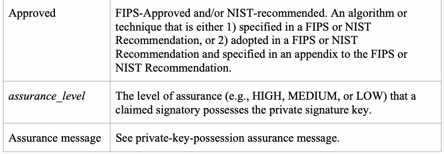
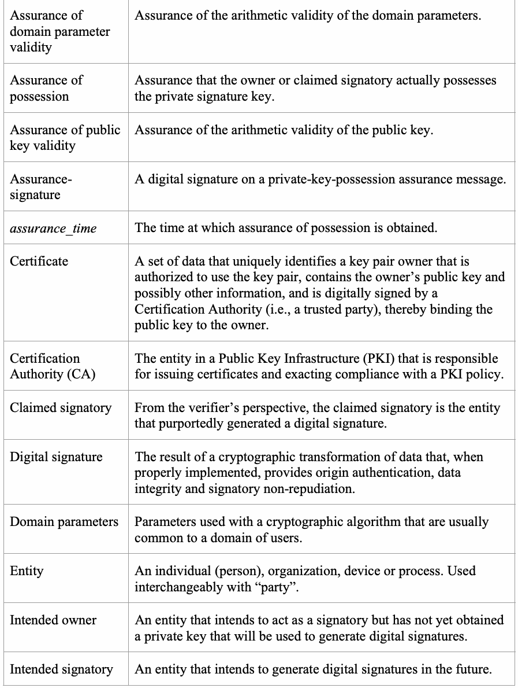
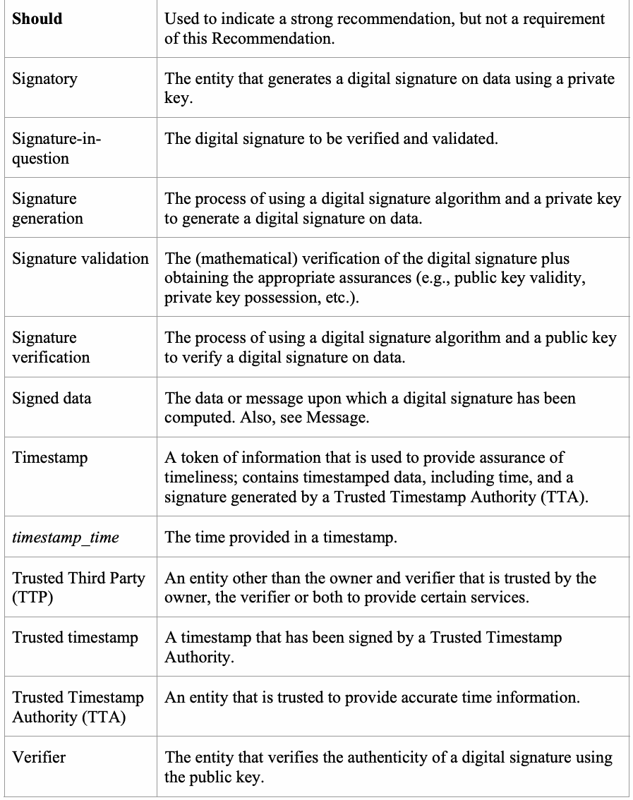
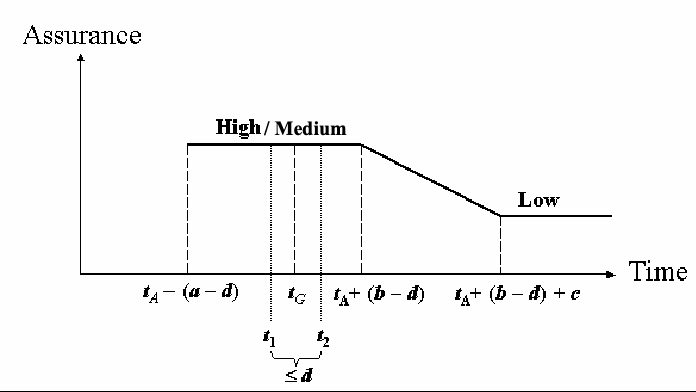

NIST Special Publication · PDF 原文抽出
Recommendation for Obtaining Assurances for Digital Signature Applications
デジタル署名アプリケーションのための保証取得に関する推奨事項
NIST SP 800-89（Recommendation for Obtaining Assurances for Digital Signature Applications）の英文と日本語訳を段落ごとに並べた閲覧用ページです。デジタル署名の生成・検証に必要な、ドメインパラメータと公開鍵の妥当性、秘密鍵の所持、鍵ペア所有者の本人性に関する保証を得る方法を示します。 翻訳は非公式です。要件の確認にはNIST の正式版 PDFを参照してください。
PDF から抽出した原文は原本との照合待ちです。
PDF p.21: 二段組の可能性があるため読み順を原本と照合してください
PDF p.25: 二段組の可能性があるため読み順を原本と照合してください
PDF p.27: 二段組の可能性があるため読み順を原本と照合してください
NIST Special Publication 800-89
NIST特別刊行物800-89
未レビュー訳Recommendation for Obtaining Assurances for Digital Signature
デジタル署名アプリケーションにおける保証の取得に関する勧告
未レビュー訳Applications
アプリケーション
未レビュー訳Elaine Barker
Elaine Barker
未レビュー訳Computer Security Division Information Technology Laboratory
コンピュータセキュリティ部門 情報技術研究所
未レビュー訳C O M P U T E R S E C U R I T Y
コンピュータセキュリティ
未レビュー訳November 2006
2006年11月
未レビュー訳U.S. Department of Commerce Carlos M. Gutierrez, Secretary
米国商務省 Carlos M. Gutierrez長官
未レビュー訳Technology Administration
技術管理局
未レビュー訳Robert Cresanti, Under Secretary of Commerce for Technology
Robert Cresanti 技術担当商務次官
未レビュー訳National Institute of Standards and Technology
国立標準技術研究所
未レビュー訳William Jeffrey, Director
William Jeffrey所長
未レビュー訳NISTロゴ（国立標準技術研究所）
Abstract
要旨
未レビュー訳Entities participating in the generation or verification of digital signatures depend on the authenticity of the process. This Recommendation specifies methods for obtaining the assurances necessary for valid digital signatures: assurance of domain parameter validity, assurance of public key validity, assurance that the key pair owner actually possesses the private key, and assurance of the identity of the key pair owner.
デジタル署名の生成または検証に参加する主体は、そのプロセスの真正性に依存する。本勧告は、有効なデジタル署名に必要な保証を得る方法を規定する。すなわち、ドメインパラメーターの有効性の保証、公開鍵の有効性の保証、鍵ペア所有者が実際に秘密鍵を保有していることの保証、および鍵ペア所有者の身元の保証である。
未レビュー訳KEY WORDS: assurance, Certification Authority, digital signatures, timestamp token, Trusted Timestamp Authority.
キーワード：保証、認証局、デジタル署名、タイムスタンプトークン、信頼できるタイムスタンプ機関。
未レビュー訳Acknowledgements
謝辞
未レビュー訳The National Institute of Standards and Technology (NIST) gratefully acknowledges and appreciates contributions by Rich Davis from the National Security Agency concerning the many security issues associated with this Recommendation. NIST also thanks the many contributions by the public and private sectors whose thoughtful and constructive comments improved the quality and usefulness of this publication.
国立標準技術研究所（NIST）は、本勧告に関する多くのセキュリティ上の課題について貢献した国家安全保障局のRich Davisに深く感謝する。また、本刊行物の品質と有用性を高めるため、建設的で有益な意見を寄せた官民両部門の多くの方々にも感謝する。
未レビュー訳Table of Contents
目次
未レビュー訳1 Introduction — 1
1 はじめに — 1
未レビュー訳2 Authority — 2
2 権限 — 2
未レビュー訳3 Definitions and Acronyms — 2
3 定義および略語 — 2
未レビュー訳3.1 Definitions — 2
3.1 定義 — 2
未レビュー訳3.2 Acronyms — 5
3.2 略語 — 5
未レビュー訳4 Assurance of Domain Parameter Validity — 6
4 ドメインパラメーターの有効性の保証 — 6
未レビュー訳4.1 Explicit Domain Parameter Validation for DSA — 7
4.1 DSAの明示的ドメインパラメーター検証 — 7
未レビュー訳4.2 Assurances When Domain Parameters are Generated by Another Entity — 8
4.2 他の主体が生成したドメインパラメーターに関する保証 — 8
未レビュー訳4.2.1 Assurance When Domain Parameters are Generated by a Trusted Party 8
4.2.1 信頼できる当事者が生成したドメインパラメーターに関する保証 — 8
未レビュー訳4.2.2 Assurance When Domain Parameters are Generated by an Untrusted
4.2.2 信頼できない当事者が生成したドメインパラメーターに関する保証
未レビュー訳Party — 9
— 9
未レビュー訳5 Assurance of Public Key Validity — 9
5 公開鍵の有効性の保証 — 9
未レビュー訳5.1 Owner Assurances of Public Key Validity — 9
5.1 公開鍵の有効性に関する所有者の保証 — 9
未レビュー訳5.2 Verifier Assurances of Public Key Validity — 10
5.2 公開鍵の有効性に関する検証者の保証 — 10
未レビュー訳5.3 (Explicit) Public Key Validation — 10
5.3 （明示的な）公開鍵検証 — 10
未レビュー訳5.3.1 (Explicit) Full Public Key Validation for DSA — 11
5.3.1 DSAの（明示的な）完全公開鍵検証 — 11
未レビュー訳5.3.2 (Explicit) Full Public Key Validation for ECDSA — 11
5.3.2 ECDSAの（明示的な）完全公開鍵検証 — 11
未レビュー訳5.3.3 (Explicit) Partial Public Key Validation for RSA — 11
5.3.3 RSAの（明示的な）部分公開鍵検証 — 11
未レビュー訳6 Assurance of Private Key Possession — 12
6 秘密鍵の保有保証 — 12
未レビュー訳6.1 The Effect of Time on Assurance of Private Key Possession — 14
6.1 秘密鍵保有保証に対する時間の影響 — 14
未レビュー訳6.2 Assurance of Possession Model with an Estimated assurance_time — 15
6.2 推定 assurance_time を用いた保有保証モデル — 15
未レビュー訳6.3 Explicitly Providing/Obtaining Assurance of Private Key Possession — 17
6.3 秘密鍵の保有保証を明示的に提供／取得する方法 — 17
未レビュー訳6.3.1 Obtaining Assurance of Possession Using a Digital Signature — 18
6.3.1 デジタル署名を用いた保有保証の取得 — 18
未レビュー訳6.3.2 Obtaining Assurance of Possession via the Regeneration of Keys — 21
6.3.2 鍵の再生成による保有保証の取得 — 21
未レビュー訳6.4 Assurance of Possession for Signatures of Generic Messages — 23
6.4 一般メッセージの署名に対する保有保証 — 23
未レビュー訳6.5 Obtaining Assurance of Private Key Possession: A Summary — 24
6.5 秘密鍵保有保証の取得：概要 — 24
未レビュー訳6.5.1 Owner’s Assurance of Private Key Possession — 24
6.5.1 秘密鍵保有に関する所有者の保証 — 24
未レビュー訳6.5.2 Assurance Obtained by a Trusted Third Party from the Owner — 26
6.5.2 所有者から信頼できる第三者が取得する保証 — 26
未レビュー訳6.5.3 Assurance Obtained by a Verifier — 28
6.5.3 検証者が取得する保証 — 28
未レビュー訳7 Assurance of Identity — 30
7 身元の保証 — 30
未レビュー訳Appendix A: The Assurance Message Instantiated via an RFC 4211
付録A：RFC 4211の証明書要求メッセージを用いた保証メッセージの具体化
未レビュー訳Certificate Request Message......................................................................... 31
........................................................................31
未レビュー訳Appendix B: References ............................................................................... 33
付録B：参考文献 ...............................................................................33
未レビュー訳Recommendation for Obtaining Assurances for Digital Signature Applications
デジタル署名アプリケーションにおける保証の取得に関する勧告
未レビュー訳1 Introduction
1 はじめに
未レビュー訳A digital signature is an electronic analogue of a written signature; the digital signature can be used to provide assurance that the claimed signatory signed the information. In addition, a digital signature may be used to detect whether or not the information was modified after it was signed (i.e., to detect the integrity of the signed data). Each signatory has a public and private key and is the owner of that key pair. The private key is used by the owner to generate a digital signature; the public key is used in the signature verification process. Entities participating in the generation or verification of digital signatures depend on the authenticity of the process. This Recommendation specifies methods for obtaining the assurances necessary for valid digital signatures: assurance of domain parameter validity, assurance of public key validity, assurance that the key pair owner actually possesses the private key, and assurance of the identity of the key pair owner. Federal Information Processing Standard (FIPS) 186-3 allows three techniques for the generation of digital signatures: the Digital Signature Algorithm (DSA), RSA1, and the Elliptic Curve Digital Signature Algorithm (ECDSA). For DSA and ECDSA, assurance of the validity of the domain parameters must be obtained (see Section 4). RSA has no domain parameters. Domain parameters may be generated by anyone, and assurance of domain parameter validity shall be obtained prior to performing any other process associated with digital signatures, including the generation of digital signature key pairs and the generation and verification of digital signatures. Digital signature keys may be generated by the intended signatory, cooperatively generated by the intended signatory and a Trusted Third Party (TTP), or generated entirely by a TTP and provided to the intended signatory. For all digital signature algorithms, each party associated with the digital signature process shall have assurance of the validity of the public keys (see Section 5) and assurance that the key pair owner actually possesses the private key used for generating the digital signature (see Section 6). In addition, assurance of the claimed signatory’s identity is required by all verifiers, including any TTPs involved in the process (see Section 7). All methods that are used to provide assurance assume the security and reliability of any routines involved in the process. Obtaining assurances normally requires explicit actions by someone. However, once the appropriate assurances are obtained, the explicitly obtained assurance can be leveraged as assurance for subsequent messages. Note that it may be appropriate to renew this assurance periodically.
デジタル署名は、手書き署名に相当する電子的な仕組みであり、主張された署名者が情報に署名したことを保証するために使用できる。また、署名後に情報が変更されたかどうか、すなわち署名データの完全性を検出するためにも使用できる。各署名者は公開鍵と秘密鍵を持ち、その鍵ペアの所有者である。所有者は秘密鍵を用いてデジタル署名を生成し、公開鍵は署名検証に用いる。デジタル署名の生成または検証に参加する主体は、プロセスの真正性に依存する。本勧告は、有効なデジタル署名に必要な保証を得る方法、すなわちドメインパラメーターの有効性、公開鍵の有効性、鍵ペア所有者による秘密鍵の実際の保有、および鍵ペア所有者の身元に関する保証を規定する。連邦情報処理標準（FIPS）186-3は、デジタル署名の生成に3つの方式を認める。デジタル署名アルゴリズム（DSA）、RSA1、および楕円曲線デジタル署名アルゴリズム（ECDSA）である。DSAおよびECDSAでは、ドメインパラメーターの有効性を保証する必要がある（第4節参照）。RSAにはドメインパラメーターがない。ドメインパラメーターは誰でも生成できるが、鍵ペアの生成、デジタル署名の生成および検証など、デジタル署名に関する他のプロセスを行う前に、その有効性を保証しなければならない。デジタル署名鍵は、予定署名者が生成するか、予定署名者と信頼できる第三者（TTP）が共同で生成するか、TTPがすべて生成して予定署名者に提供できる。すべてのデジタル署名方式において、署名プロセスに関わる各当事者は、公開鍵が有効であること（第5節参照）、および鍵ペア所有者が署名生成に用いる秘密鍵を実際に保有していること（第6節参照）の保証を得なければならない。また、TTPを含むすべての検証者は、主張された署名者の身元の保証を必要とする（第7節参照）。保証を提供するすべての方法は、プロセスに関わるルーチンの安全性と信頼性を前提とする。保証の取得には通常、誰かによる明示的な措置が必要である。ただし、適切な保証を一度得れば、その明示的に取得した保証を後続メッセージの保証として利用できる。なお、この保証は定期的に更新することが適切な場合がある。
未レビュー訳2 Authority
2 権限
未レビュー訳This document has been developed by the National Institute of Standards and Technology (NIST) in furtherance of its statutory responsibilities under the Federal Information Security Management Act (FISMA) of 2002, Public Law 107-347. NIST is responsible for developing standards and guidelines, including minimum requirements, for providing adequate information security for all agency operations and assets, but such standards and guidelines shall not apply to national security systems. This recommendation is consistent with the requirements of the Office of Management and Budget (OMB) Circular A-130, Section 8b(3), Securing Agency Information Systems, as analyzed in A-130, Appendix IV: Analysis of Key Sections. Supplemental information is provided in A-130, Appendix III. This Recommendation has been prepared for use by Federal agencies. It may be used by non-governmental organizations on a voluntary basis and is not subject to copyright (attribution would be appreciated by NIST.) Nothing in this Recommendation should be taken to contradict standards and guidelines made mandatory and binding on Federal agencies by the Secretary of Commerce under statutory authority. Nor should this Recommendation be interpreted as altering or superseding the existing authorities of the Secretary of Commerce, Director of the OMB, or any other federal official. Conformance testing for implementations of this Recommendation will be conducted within the framework of the Cryptographic Module Validation Program (CMVP), a joint effort of NIST and the Communications Security Establishment of the Government of Canada.
本書は、2002年連邦情報セキュリティ管理法（FISMA）、Public Law 107-347に基づく法定責務を果たすため、国立標準技術研究所（NIST）が作成した。NISTは、国家安全保障システムには適用されないものの、すべての機関の業務および資産に適切な情報セキュリティを提供するための最低要件を含む標準およびガイドラインを策定する責任を負う。本勧告は、行政管理予算局（OMB）通達A-130第8b(3)節「機関情報システムの保護」の要件と整合しており、A-130付録IV「主要条項の分析」で分析されている。補足情報はA-130付録IIIに示す。本勧告は連邦機関での使用を想定して作成された。非政府組織も任意で使用でき、著作権の対象ではない（NISTの表示を歓迎する）。本勧告のいかなる記述も、法的権限に基づき商務長官が連邦機関に義務付け、拘束力を持たせた標準およびガイドラインに反すると解釈してはならない。また、本勧告を、商務長官、OMB長官、その他の連邦政府職員が有する既存の権限を変更または置き換えるものと解釈してはならない。本勧告に基づく実装の適合性試験は、NISTとカナダ政府通信セキュリティ機関の共同事業である暗号モジュール検証プログラム（CMVP）の枠組みで実施される。
未レビュー訳3 Definitions and Acronyms
3 定義および略語
未レビュー訳3.1 Definitions
3.1 定義
未レビュー訳The following definitions are provided.
以下に用語を定義する。
未レビュー訳| Approved | FIPS-Approved and/or NIST-recommended. An algorithm or technique that is either 1) specified in a FIPS or NIST Recommendation, or 2) adopted in a FIPS or NIST Recommendation and specified in an appendix to the FIPS or NIST Recommendation. |
| assurance_level | The level of assurance (e.g., HIGH, MEDIUM, or LOW) that a claimed signatory possesses the private signature key. |
| Assurance message | See private-key-possession assurance message. |
原本PDFの抜粋画像

| 承認済み | FIPSで承認済みおよび／またはNIST推奨。次のいずれかに該当するアルゴリズムまたは技法：(1) FIPSまたはNIST勧告に規定されている、または (2) FIPSまたはNIST勧告で採択され、当該勧告の付録に規定されている。 |
| assurance_level | 主張された署名者が秘密署名鍵を保有していることについての保証水準（例：HIGH、MEDIUM、LOW）。 |
| 保証メッセージ | 秘密鍵保有保証メッセージを参照。 |
| Assurance of domain parameter validity | Assurance of the arithmetic validity of the domain parameters. |
| Assurance of possession | Assurance that the owner or claimed signatory actually possesses the private signature key. |
| Assurance of public key validity | Assurance of the arithmetic validity of the public key. |
| Assurance- signature | A digital signature on a private-key-possession assurance message. |
| assurance_time | The time at which assurance of possession is obtained. |
| Certificate | A set of data that uniquely identifies a key pair owner that is authorized to use the key pair, contains the owner’s public key and possibly other information, and is digitally signed by a Certification Authority (i.e., a trusted party), thereby binding the public key to the owner. |
| Certification Authority (CA) | The entity in a Public Key Infrastructure (PKI) that is responsible for issuing certificates and exacting compliance with a PKI policy. |
| Claimed signatory | From the verifier’s perspective, the claimed signatory is the entity that purportedly generated a digital signature. |
| Digital signature | The result of a cryptographic transformation of data that, when properly implemented, provides origin authentication, data integrity and signatory non-repudiation. |
| Domain parameters | Parameters used with a cryptographic algorithm that are usually common to a domain of users. |
| Entity | An individual (person), organization, device or process. Used interchangeably with “party”. |
| Intended owner | An entity that intends to act as a signatory but has not yet obtained a private key that will be used to generate digital signatures. |
| Intended signatory | An entity that intends to generate digital signatures in the future. |
原本PDFの抜粋画像

| ドメインパラメーター有効性の保証 | ドメインパラメーターの算術的有効性に関する保証。 |
| 保有の保証 | 所有者または主張された署名者が秘密署名鍵を実際に保有していることの保証。 |
| 公開鍵有効性の保証 | 公開鍵の算術的有効性に関する保証。 |
| 保証署名 | 秘密鍵保有保証メッセージに対するデジタル署名。 |
| assurance_time | 保有の保証を取得した時刻。 |
| 証明書 | 鍵ペアの使用を認可された所有者を一意に識別するデータ集合。所有者の公開鍵および場合によってはその他の情報を含み、認証局（すなわち信頼できる当事者）がデジタル署名することで公開鍵と所有者を結び付ける。 |
| 認証局（CA） | 公開鍵基盤（PKI）において、証明書の発行およびPKIポリシーの遵守徹底を担う主体。 |
| 主張された署名者 | 検証者の視点から、デジタル署名を生成したとされる主体。 |
| デジタル署名 | 適切に実装されている場合、送信元認証、データ完全性、および署名者の否認防止を提供するデータの暗号変換結果。 |
| ドメインパラメーター | 通常、利用者ドメイン内で共通して用いられる暗号アルゴリズムのパラメーター。 |
| 主体 | 個人、人、組織、デバイスまたはプロセス。「当事者」と同じ意味で用いる。 |
| 予定所有者 | 署名者として行動する意図はあるが、デジタル署名の生成に用いる秘密鍵をまだ取得していない主体。 |
| 予定署名者 | 将来デジタル署名を生成する意図を持つ主体。 |
| Key | A parameter used in conjunction with a cryptographic algorithm that determines its operation in such a way that an entity with knowledge of the key can reproduce the operation, while an entity without knowledge of the key cannot. Examples of the use of a key that are applicable to this Recommendation include: 1. The computation of a digital signature from data, and 2. The verification of a digital signature. |
| Key pair | A public key and its corresponding private key. |
| Message | The data that is signed. Also known as “signed data” during the signature verification and validation process. |
| Non-assurance message | A signed message that does not contain all information required for an assurance message. |
| Owner | A key pair owner is the entity that is authorized to use the private key of a key pair. |
| Party | An individual (person), organization, device or process. Used interchangeably with “entity”. |
| Private key | A cryptographic key that is used with an asymmetric (public key) cryptographic algorithm. For digital signatures, the private key is uniquely associated with the owner and is not made public. The private key is used to compute a digital signature that may be verified by the corresponding public key. |
| Private-key possession assurance message | A message that is sent by a signatory that will be used to obtain assurance of possession. Also known as an assurance message. |
| Public key | A cryptographic key that is used with an asymmetric (public key) cryptographic algorithm and is associated with a private key. The public key is associated with an owner and may be made public. In the case of digital signatures, the public key is used to verify a digital signature that was signed by the corresponding private key. |
| Relying party | A party that depends on the validity of the digital signature process. |
| Shall | Used to indicate a requirement of this Recommendation. |
原本PDFの抜粋画像

| 鍵 | 暗号アルゴリズムと併用し、その動作を決定するパラメーター。鍵を知る主体はその動作を再現できるが、鍵を知らない主体は再現できない。本勧告に関係する鍵の使用例：(1) データからデジタル署名を計算すること、(2) デジタル署名を検証すること。 |
| 鍵ペア | 公開鍵と、それに対応する秘密鍵。 |
| メッセージ | 署名されるデータ。署名の検証および妥当性確認の過程では「署名データ」とも呼ぶ。 |
| 非保証メッセージ | 保証メッセージに必要な情報をすべて含まない署名付きメッセージ。 |
| 所有者 | 鍵ペアの秘密鍵を使用する権限を持つ主体。 |
| 当事者 | 個人、人、組織、デバイスまたはプロセス。「主体」と同じ意味で用いる。 |
| 秘密鍵 | 非対称（公開鍵）暗号アルゴリズムと併用する暗号鍵。デジタル署名では、秘密鍵は所有者に一意に関連付けられ、公開されない。対応する公開鍵で検証できるデジタル署名の計算に用いる。 |
| 秘密鍵保有保証メッセージ | 保有の保証を取得するために署名者が送信するメッセージ。保証メッセージとも呼ぶ。 |
| 公開鍵 | 非対称（公開鍵）暗号アルゴリズムと併用し、秘密鍵に関連付けられた暗号鍵。所有者に関連付けられ、公開してもよい。デジタル署名では、対応する秘密鍵で署名されたデジタル署名の検証に用いる。 |
| 依拠当事者 | デジタル署名プロセスの有効性に依存する当事者。 |
| Shall | 本勧告の要件を示すために使用する。 |
| Should | Used to indicate a strong recommendation, but not a requirement of this Recommendation. |
| Signatory | The entity that generates a digital signature on data using a private key. |
| Signature-in question | The digital signature to be verified and validated. |
| Signature generation | The process of using a digital signature algorithm and a private key to generate a digital signature on data. |
| Signature validation | The (mathematical) verification of the digital signature plus obtaining the appropriate assurances (e.g., public key validity, private key possession, etc.). |
| Signature verification | The process of using a digital signature algorithm and a public key to verify a digital signature on data. |
| Signed data | The data or message upon which a digital signature has been computed. Also, see Message. |
| Timestamp | A token of information that is used to provide assurance of timeliness; contains timestamped data, including time, and a signature generated by a Trusted Timestamp Authority (TTA). |
| timestamp_time | The time provided in a timestamp. |
| Trusted Third Party (TTP) | An entity other than the owner and verifier that is trusted by the owner, the verifier or both to provide certain services. |
| Trusted timestamp | A timestamp that has been signed by a Trusted Timestamp Authority. |
| Trusted Timestamp Authority (TTA) | An entity that is trusted to provide accurate time information. |
| Verifier | The entity that verifies the authenticity of a digital signature using the public key. |
原本PDFの抜粋画像

| Should | 強い推奨を示すが、本勧告の要件ではないことを示すために使用する。 |
| 署名者 | 秘密鍵を用いてデータにデジタル署名を生成する主体。 |
| 対象署名 | 検証および妥当性確認の対象となるデジタル署名。 |
| 署名生成 | デジタル署名アルゴリズムと秘密鍵を用いてデータにデジタル署名を生成するプロセス。 |
| 署名の妥当性確認 | デジタル署名の（数学的）検証に、適切な保証（例：公開鍵の有効性、秘密鍵の保有など）の取得を加えたもの。 |
| 署名検証 | デジタル署名アルゴリズムと公開鍵を用いてデータ上のデジタル署名を検証するプロセス。 |
| 署名データ | デジタル署名が計算されたデータまたはメッセージ。「メッセージ」も参照。 |
| タイムスタンプ | 適時性の保証に用いる情報トークン。タイムスタンプ付きデータ（時刻を含む）および信頼できるタイムスタンプ機関（TTA）が生成した署名を含む。 |
| timestamp_time | タイムスタンプに記載された時刻。 |
| 信頼できる第三者（TTP） | 所有者および検証者以外の主体で、特定のサービスを提供することについて所有者、検証者、またはその両方から信頼されるもの。 |
| 信頼できるタイムスタンプ | 信頼できるタイムスタンプ機関が署名したタイムスタンプ。 |
| 信頼できるタイムスタンプ機関（TTA） | 正確な時刻情報を提供するものとして信頼される主体。 |
| 検証者 | 公開鍵を用いてデジタル署名の真正性を検証する主体。 |
3.2 Acronyms
3.2 略語
未レビュー訳
| ANS | 米国国家規格。 |
| CA | Certification Authority. |
| DSA | Digital Signature Algorithm (specified in FIPS 186-3). |
| ECDSA | Elliptic Curve Digital Signature Algorithm; allowed in FIPS 186-3 and specified in ANS X9.62. |
| FIPS | Federal Information Processing Standard. |
| FISMA | Federal Information Security Management Act. |
| NIST | National Institute of Standards and Technology. |
| OMB | Office of Management and Budget. |
| PKCS | Public Key Cryptography Standard. |
| PKI | Public Key Infrastructure. |
| RSA | Algorithm developed by Rivest, Shamir and Adelman (allowed in FIPS 186-3 and specified in ANS X9.31 and PKCS #1). |
| SHA-1 | A hash function specified in FIPS 180-2, the Secure Hash Standard. |
| TST | Timestamp Token. |
| TTA | Trusted Timestamp Authority. |
| TTP | Trusted Third Party. |
原本PDFの抜粋画像

| CA | 認証局。 |
| DSA | デジタル署名アルゴリズム（FIPS 186-3に規定）。 |
| ECDSA | 楕円曲線デジタル署名アルゴリズム。FIPS 186-3で使用が認められ、ANS X9.62に規定。 |
| FIPS | 連邦情報処理標準。 |
| FISMA | 連邦情報セキュリティ管理法。 |
| NIST | 国立標準技術研究所。 |
| OMB | 行政管理予算局。 |
| PKCS | 公開鍵暗号標準。 |
| PKI | 公開鍵基盤。 |
| RSA | Rivest、Shamir、Adelmanが開発したアルゴリズム（FIPS 186-3で使用が認められ、ANS X9.31およびPKCS #1に規定）。 |
| SHA-1 | FIPS 180-2「セキュアハッシュ標準」に規定されるハッシュ関数。 |
| TST | タイムスタンプトークン。 |
| TTA | 信頼できるタイムスタンプ機関。 |
| TTP | 信頼できる第三者。 |
4 Assurance of Domain Parameter Validity
4 ドメインパラメーターの有効性の保証
未レビュー訳DSA and ECDSA depend on the arithmetic validity of the domain parameters. All parties associated with the digital signature process shall have assurance of their validity prior to using them. Intended signatories shall obtain this assurance prior to generating their keys or using keys provided for their use by a TTP. A TTP that generates keys for an intended signatory shall obtain assurance of domain parameter validity prior to generating keys. A Certification Authority (CA) that issues certificates for intended signatories shall obtain this assurance prior to issuing digital signature certificates. Verifiers shall obtain this assurance prior to the verification of a digital signature. Users of the domain parameters must have assurance that the domain parameters are valid for the lifetime of any keys that are associated with the domain parameters. Each entity shall obtain assurance that the domain parameters are valid using at least one of the following methods:
DSAおよびECDSAは、ドメインパラメーターの算術的な有効性に依存する。デジタル署名プロセスに関わるすべての当事者は、ドメインパラメーターを使用する前に、その有効性の保証を得なければならない。予定署名者は鍵を生成する前、またはTTPから提供された鍵を使用する前に、この保証を得なければならない。予定署名者のために鍵を生成するTTPは、鍵を生成する前にドメインパラメーターの有効性を保証しなければならない。予定署名者の証明書を発行する認証局（CA）は、デジタル署名証明書を発行する前にこの保証を得なければならない。検証者はデジタル署名を検証する前にこの保証を得なければならない。ドメインパラメーターの利用者は、それに関連付けられた鍵の有効期間全体にわたって、当該パラメーターが有効であるとの保証を得なければならない。各主体は、次の方法の少なくとも1つを用いてドメインパラメーターの有効性を保証しなければならない。
未レビュー訳1.The entity itself generates the domain parameters according to the specified requirements (see FIPS 186-3 for DSA, and American National Standard (ANS) X9.62 for ECDSA).
1.主体が、指定された要件に従ってドメインパラメーターを自ら生成する（DSAについてはFIPS 186-3、ECDSAについては米国規格ANS X9.62を参照）。
未レビュー訳2.The entity performs an explicit domain parameter validation and obtains an indication of validity (see Section 4.1 for DSA, and ANS X9.62 for ECDSA; for ECDSA, a check that the subgroup order n and the cofactor h are selected appropriately for the security strength shall also be included).
2.主体がドメインパラメーターを明示的に検証し、有効性の判定結果を得る（DSAについては第4.1節、ECDSAについてはANS X9.62を参照する。ECDSAでは、部分群の位数nおよび余因子hがセキュリティ強度に応じて適切に選択されていることの確認も含めなければならない）。
未レビュー訳3.The entity has received assurance from a TTP (e.g., a CA) that the domain parameters were valid at the time that they were generated because the TTP either generated the domain parameters (see method 1 above and Section 4.2), or has performed an explicit domain parameter validation (see method 2 above).
3.主体がTTP（例：CA）からドメインパラメーターの生成時点で有効だったとの保証を受ける。TTPは、(1) 自らパラメーターを生成した（上記方法1および第4.2節参照）、または (2) 明示的な検証を実施した（上記方法2参照）のいずれかである。
未レビュー訳Note: Some domain parameters have been generated using SHA-1 (e.g., the NIST Recommended curves in FIPS 186-3). When SHA-1 is no longer approved for the generation of digital signatures (see [2]), those domain parameters that were generated using SHA-1 and were successfully validated while SHA-1 was still Approved will continue to qualify as valid.
注：一部のドメインパラメーター（例：FIPS 186-3のNIST推奨曲線）はSHA-1を用いて生成されている。デジタル署名の生成にSHA-1が承認されなくなった後も（[2]参照）、SHA-1が承認されていた期間に生成され、正常に検証されたドメインパラメーターは引き続き有効とみなされる。
未レビュー訳The entity, or an agent trusted to act on the entity’s behalf, shall know which method(s) of assurance were used in order to determine that the provided assurance is sufficient and appropriate to meet an application’s requirements.
提供された保証がアプリケーションの要件に十分かつ適切かを判断できるよう、主体または主体を代理する権限を与えられた信頼できる者は、どの保証方法が用いられたかを把握していなければならない。
未レビュー訳4.1 Explicit Domain Parameter Validation for DSA
4.1 DSAの明示的ドメインパラメーター検証
未レビュー訳DSA domain parameters are explicitly validated using the following procedure or its equivalent if p, q, g, domain_parameter_seed, and counter are known: Input:
p、q、g、domain_parameter_seedおよびcounterが既知の場合、DSAドメインパラメーターは以下の手順、またはそれと同等の手順で明示的に検証する。入力：
未レビュー訳1. L
1. L
未レビュー訳The length of p in bits.
pのビット長。
未レビュー訳2. N
2. N
未レビュー訳The length of q in bits.
qのビット長。
未レビュー訳3.p, q, g, domain_parameter_seed, counter
3.p, q, g, domain_parameter_seed, counter
未レビュー訳The domain parameters, where p and q are primes, g is the generator, domain_parameter_seed is the domain parameter seed that was used to generate p and q, and counter was obtained during the generation of p and q.
ドメインパラメーター。ここで、pおよびqは素数、gは生成元、domain_parameter_seedはpおよびqの生成に使用したドメインパラメーターシード、counterはpおよびqの生成過程で得られた値である。
未レビュー訳Output:
出力：
未レビュー訳1.status The status returned from the validation routine, where status is either g_partially_validated, g_fully_validated or INVALID.
1.status 検証ルーチンが返す状態。statusはg_partially_validated、g_fully_validated、またはINVALIDのいずれかである。
未レビュー訳Process:
処理：
未レビュー訳Comment: Verify the values of the (L, N) pair specified in FIPS 186-3.
コメント：(L, N)の組がFIPS 186-3で規定された値であることを確認する。
未レビュー訳1.Verify that the (L, N) pair is valid. If (L, N) is not in the list of Approved pairs (see FIPS 186-3), then return INVALID.
1.(L, N)の組が有効であることを確認する。(L, N)が承認済みの組の一覧（FIPS 186-3参照）にない場合は、INVALIDを返す。
未レビュー訳2.Verify that p and q were generated using one of the prime generation algorithms specified in Appendix A.1 of FIPS 186-32, and execute the appropriate validation algorithm. If p and q were not generated as specified in FIPS 186-3, or the validation algorithm returns INVALID, then return INVALID. Otherwise, go to step 3.
2.pおよびqがFIPS 186-3の付録A.1に規定された素数生成アルゴリズムのいずれかで生成されたことを確認し、該当する検証アルゴリズムを実行する。pおよびqがFIPS 186-3に従って生成されていない場合、または検証アルゴリズムがINVALIDを返す場合は、INVALIDを返す。それ以外の場合は手順3へ進む。
未レビュー訳3.If g was generated using the unverifiable generation method specified in Appendix A.2.1 of FIPS 186-3, then go to step 4. Otherwise, go to step 5.
3.gがFIPS 186-3の付録A.2.1に規定された検証不能な生成方式で生成された場合は、手順4へ進む。それ以外の場合は手順5へ進む。
未レビュー訳4.Perform a partial validation of g using the process specified in Annex A.2.2 of FIPS 186-3. If PARTIALLY VALID is returned, then return g_partially_validated. Otherwise, return INVALID.
4.FIPS 186-3の附属書A.2.2に規定された手順でgを部分検証する。PARTIALLY VALIDが返された場合はg_partially_validatedを返す。それ以外の場合はINVALIDを返す。
未レビュー訳5.If g was generated using the verifiable generation method specified in Appendix A.2.3 of FIPS 186-3, perform the validation process specified in Appendix A.2.4 of FIPS 186-3. If this process returns INVALID, then return INVALID. Otherwise, return g_fully_validated.
5.gがFIPS 186-3の付録A.2.3に規定された検証可能な生成方式で生成された場合、同規格の付録A.2.4に規定された検証手順を実行する。この手順がINVALIDを返す場合はINVALIDを返す。それ以外の場合はg_fully_validatedを返す。
未レビュー訳4.2 Assurances When Domain Parameters are Generated by Another
4.2 他の主体が生成したドメインパラメーターに関する保証
未レビュー訳Entity
主体
未レビュー訳There are two basic scenarios for DSA and ECDSA domain parameter generation: generation by a trusted party and generation by a non-trusted party. Domain parameter generation by a trusted party means that this party is trusted by all users in a particular (sub) domain to correctly generate valid sets of domain parameters. This trusted party “guarantees” the validity of all sets of domain parameters that it generates, and generates new sets of parameters as needed. Note that users outside the particular (sub) domain may have little or no trust in the domain parameters generated by this party. The generation of (candidate) domain parameters by an untrusted party means that the untrusting users require some evidence that the domain parameters are valid. These users may be concerned that the (candidate) domain parameters are generated incorrectly, or that the party generating the domain parameters may be an adversary that is trying to gain an advantage by generating the parameters in a non-standard manner. If these situations can arise, the (candidate) domain parameters shall be generated in a manner that will allow any concerned user to obtain assurance that the parameters are indeed valid. There are different methods of obtaining assurance of domain parameter validity that depend on whether or not the user seeking assurance trusts the party that generated the parameters.
DSAおよびECDSAのドメインパラメーター生成には、信頼できる当事者が生成する場合と信頼できない当事者が生成する場合の2つの基本シナリオがある。信頼できる当事者による生成とは、特定の（サブ）ドメイン内のすべての利用者が、その当事者は有効なドメインパラメーターの組を正しく生成すると信頼していることを意味する。この当事者は、自ら生成するすべての組の有効性を「保証」し、必要に応じて新しい組を生成する。ただし、当該（サブ）ドメイン外の利用者は、その当事者が生成したパラメーターをほとんど、またはまったく信頼しない可能性がある。信頼できない当事者による（候補）ドメインパラメーターの生成とは、保証を求める利用者が、その有効性を示す何らかの証拠を必要とすることを意味する。利用者は、（候補）パラメーターの生成誤り、または生成者が標準外の方法でパラメーターを生成して優位を得ようとする敵対者である可能性を懸念する場合がある。そのような状況があり得る場合、懸念する利用者が有効性を保証できる方法で（候補）パラメーターを生成しなければならない。有効性を保証する方法は、保証を求める利用者がパラメーターの生成者を信頼するか否かによって異なる。
未レビュー訳4.2.1 Assurance When Domain Parameters are Generated by a Trusted
4.2.1 信頼できる当事者が生成したドメインパラメーターに関する保証
未レビュー訳Party
当事者
未レビュー訳Domain parameters may be generated by a party (i.e., a TTP) that is trusted by an entity to generate them correctly. Assurance of domain parameter validity is provided to the entity because of that trust. However, the TTP shall obtain this assurance for itself using one of the following methods:
ドメインパラメーターは、正しく生成すると主体が信頼する当事者（TTP）が生成する場合がある。この信頼に基づいて、主体は有効性の保証を得る。ただし、TTP自身が次のいずれかの方法で有効性を保証しなければならない。
未レビュー訳1.The TTP generates the set of domain parameters.
1.TTPがドメインパラメーターの組を生成する。
未レビュー訳2.The TTP selects the set of domain parameters from a list published by an entity that the TTP trusts.
2.TTPが信頼する主体の公表した一覧から、ドメインパラメーターの組を選択する。
未レビュー訳3.The TTP performs explicit domain parameter validation and obtains an indication of validity (see Section 4.1 for DSA and ANS X9.62 for ECDSA).
3.TTPがドメインパラメーターを明示的に検証し、有効性の判定結果を得る（DSAについては第4.1節、ECDSAについてはANS X9.62を参照）。
未レビュー訳4.2.2 Assurance When Domain Parameters are Generated by an Untrusted
4.2.2 信頼できない当事者が生成したドメインパラメーターに関する保証
未レビュー訳Party
当事者
未レビュー訳Domain parameters may be generated by a party that is not trusted by the entity requiring assurance of domain parameter validity. In this case, the entity shall obtain assurance of domain parameter validity using at least one of the following methods:
有効性の保証を必要とする主体が信頼していない当事者が、ドメインパラメーターを生成する場合がある。この場合、主体は次の方法の少なくとも1つを用いて有効性を保証しなければならない。
未レビュー訳1.The entity performs explicit domain parameter validation and obtains an indication of validity (see Section 4.1 for DSA and ANS X9.62 for ECDSA).
1.主体がドメインパラメーターを明示的に検証し、有効性の判定結果を得る（DSAについては第4.1節、ECDSAについてはANS X9.62を参照）。
未レビュー訳2.The entity receives assurance from a third party (i.e., a TTP) that is trusted by that entity that the TTP performed an explicit domain parameter validation and obtained an indication of validity (see Section 4.1 for DSA and ANS X9.62 for
2.主体が信頼する第三者（TTP）から、そのTTPが明示的なドメインパラメーター検証を実施して有効性の判定結果を得たとの保証を受ける（第4.1節のDSAおよびANS X9.62のECDSAを参照）。
未レビュー訳ECDSA).
ECDSA）。
未レビュー訳5 Assurance of Public Key Validity
5 公開鍵の有効性の保証
未レビュー訳The correct functioning of the digital signature algorithms depends on the arithmetic validity of the public/private key pair that is used for digital signature generation and verification. Digital signature key pairs shall be generated by the intended signatory, generated in a cooperative process by both the signatory and a TTP, or generated by a TTP (trusted by the intended signatory) and provided to the intended signatory. Each intended signatory (i.e., the key pair owner) shall have assurance of public key validity prior to generating a digital signature (see Section 5.1). Each verifier shall have assurance of the validity of the public key prior to verifying a digital signature (see Section 5.2). CAs shall have assurance of public key validity prior to issuing a digital signature certificate containing the digital signature public key for the owner. For DSA and ECDSA, an entity shall obtain assurance of domain parameter validity prior to obtaining assurance of public key validity.
デジタル署名アルゴリズムが正しく機能するには、署名の生成および検証に用いる公開鍵／秘密鍵ペアが算術的に有効である必要がある。デジタル署名鍵ペアは、予定署名者が生成するか、署名者とTTPが協力して生成するか、予定署名者が信頼するTTPが生成して予定署名者に提供しなければならない。各予定署名者（すなわち鍵ペア所有者）は、デジタル署名を生成する前に公開鍵の有効性を保証しなければならない（第5.1節参照）。各検証者はデジタル署名を検証する前に公開鍵の有効性を保証しなければならない（第5.2節参照）。CAは、所有者のデジタル署名公開鍵を含むデジタル署名証明書を発行する前に、その公開鍵の有効性を保証しなければならない。DSAおよびECDSAでは、主体は公開鍵の有効性を保証する前にドメインパラメーターの有効性を保証しなければならない。
未レビュー訳5.1 Owner Assurances of Public Key Validity
5.1 公開鍵の有効性に関する所有者の保証
未レビュー訳The owner shall obtain assurance of the validity of its own public key using one or more of the following methods. Maximal assurance is provided when method 1 or 2 is combined with method 3 or 4.
所有者は、次の1つ以上の方法を用いて、自身の公開鍵の有効性について保証を得なければならない。方法1または2を方法3または4と組み合わせると、最も高い保証が得られる。
未レビュー訳1.Intended owner generation. The intended owner generates the key pair.
1.所有者による鍵生成。鍵の予定所有者が鍵ペアを生成する。
未レビュー訳2.Cooperative generation by the owner and a TTP. The intended owner generates the key pair with the assistance of a TTP using an Approved method.
2.所有者とTTPによる共同生成。鍵の予定所有者が、承認済みの方法を用いてTTPの支援のもとで鍵ペアを生成する。
未レビュー訳3.Intended owner validation. The intended owner performs an explicit public key validation (see Section 5.3) and receives an indication of validity.
3.所有者による検証。鍵の予定所有者が明示的な公開鍵検証（5.3節を参照）を実施し、有効との結果を受け取る。
未レビュー訳4.TTP validation. The intended owner receives assurance that a TTP (trusted by the intended owner) has performed a successful public key validation on the intended owner’s public key for which assurance is to be obtained (see Section 5.3) and received an indication of validity. The TTP shall provide the public key validation result to the intended owner.
4.TTPによる検証。鍵の予定所有者は、（予定所有者が信頼する）TTPが、保証対象の予定所有者の公開鍵に対して公開鍵検証（5.3節を参照）を正常に実施し、有効との結果を受け取ったことについて保証を得る。TTPは公開鍵検証の結果を予定所有者に提供しなければならない。
未レビュー訳5.TTP generation. The intended owner receives assurance when a TTP (trusted by the intended owner) generates the key pair and provides it to the intended owner. This method is not preferred, since the TTP will know the private key and must be trusted not to masquerade as the owner. However, if used, this method should include public key validation by the owner or TTP (method 3 or method 4).
5.TTPによる生成。鍵の予定所有者は、（予定所有者が信頼する）TTPが鍵ペアを生成して予定所有者に提供した場合に保証を得る。TTPが秘密鍵を知ることになり、所有者になりすまさないと信頼されなければならないため、この方法は推奨されない。ただし、この方法を使用する場合は、所有者またはTTPによる公開鍵検証（方法3または4）を含めることが望ましい。
未レビュー訳The owner, or an agent trusted to act on the owner’s behalf, shall know which method(s) of assurance were used in order to determine that the provided assurance is sufficient and appropriate to meet the owner’s requirements.
所有者または所有者に代わって行動することを信頼された代理人は、提供された保証が所有者の要件を満たすのに十分かつ適切かを判断するため、どの保証方法が使用されたかを把握していなければならない。
未レビュー訳5.2 Verifier Assurances of Public Key Validity
5.2 公開鍵の有効性に関する検証者の保証
未レビュー訳A verifier shall obtain assurance of the validity of a claimed signatory’s public key using one or more of the following methods; the first two methods are preferred.
検証者は、主張された署名者の公開鍵の有効性について、次の1つ以上の方法で保証を得なければならない。最初の2つの方法が望ましい。
未レビュー訳1.Verifier validation: The verifier performs an explicit public key validation as described in Section 5.3 and receives an indication of validity.
1.検証者による検証：検証者が5.3節の記述に従って明示的な公開鍵検証を実施し、有効との結果を受け取る。
未レビュー訳2.TTP assurance of validity: The verifier receives assurance from a TTP (i.e., trusted by the verifier) that the TTP has performed an explicit public key validation as described in Section 5.3 and received an indication of validity.
2.TTPによる有効性保証：検証者は、（検証者が信頼する）TTPが5.3節の記述に従って明示的な公開鍵検証を実施し、有効との結果を受け取ったことについて、そのTTPから保証を得る。
未レビュー訳3.TTP assurance of public key generation or regeneration: The verifier receives assurance when a TTP (trusted by the verifier) has generated or regenerated the public key using trusted routines and has checked the consistency of the key pair. This method may impact the non-repudiation property that could be desired for some signatures, as the TTP will know the private key and must be trusted not to masquerade as the owner.
3.TTPによる公開鍵生成または再生成の保証：TTP（検証者が信頼する）が信頼できるルーチンを用いて公開鍵を生成または再生成し、鍵ペアの整合性を確認した場合、検証者は保証を得る。この方法ではTTPが秘密鍵を知るため、所有者になりすまさないと信頼されなければならず、一部の署名で望まれる否認防止特性に影響する可能性がある。
未レビュー訳The verifier, or an agent trusted by the verifier, shall know which method(s) of assurance were used in order for the verifier to determine that the provided assurance is sufficient and appropriate to meet the verifier’s requirements.
検証者または検証者が信頼する代理人は、提供された保証が検証者の要件を満たすのに十分かつ適切かを判断できるよう、どの保証方法が使用されたかを把握していなければならない。
未レビュー訳5.3 (Explicit) Public Key Validation
5.3 （明示的な）公開鍵検証
未レビュー訳Public key validation is the process of checking the arithmetic characteristics of the public key. Public key validation does not require knowledge of the associated private key; therefore, it may be performed by anyone at any time. Section 5.3.1 specifies the method for full public key validation for DSA. Section 5.3.2 specifies the method for full public key validation for ECDSA. At present, there is no method defined for full public key validation for RSA; however, a method for partial public key validation is specified in Section 5.3.3 that is to be used until an Approved method for full validation is available.
公開鍵検証とは、公開鍵の算術的特性を確認するプロセスである。関連する秘密鍵を知る必要はないため、誰でもいつでも公開鍵検証を実施できる。5.3.1節ではDSAの完全な公開鍵検証方法を規定し、5.3.2節ではECDSAの完全な公開鍵検証方法を規定する。現時点ではRSAの完全な公開鍵検証方法は定義されていない。ただし、完全検証の承認済み方法が利用可能になるまでは、5.3.3節に規定する部分的な公開鍵検証方法を使用する。
未レビュー訳5.3.1 (Explicit) Full Public Key Validation for DSA
5.3.1 DSAの（明示的な）完全公開鍵検証
未レビュー訳The following process or its equivalent shall be used to validate a DSA signature verification public key when public key validation is performed. Input:
公開鍵検証を実施する場合、DSA署名検証用公開鍵の検証には、以下のプロセスまたはその同等のプロセスを使用しなければならない。入力：
未レビュー訳1.p, q The primes.
1.p, q 素数。
未レビュー訳2.g The generator.
2.g 生成元。
未レビュー訳3.y The public key to be validated with respect to p, q and g.
3.y p、q、gに関して検証する公開鍵。
未レビュー訳Output:
出力：
未レビュー訳1.status The status returned from the validation routine, where status is either VALID or INVALID.
1.status 検証ルーチンが返す状態。statusはVALIDまたはINVALIDのいずれか。
未レビュー訳Process:
プロセス：
未レビュー訳1.Verify that 2 ≤ y ≤ p-2. Comment: Ensure that the key has the unique correct representation and range in the field.
1.2 ≤ y ≤ p−2であることを確認する。注記：鍵が有限体における一意で正しい表現および範囲を持つことを確認する。
未レビュー訳2.Verify that yq ≡ 1 mod p. Comment: Ensure that the key has the correct order in the subgroup.
2.y^q ≡ 1 mod pであることを確認する。注記：鍵が部分群における正しい位数を持つことを確認する。
未レビュー訳3.If either of the above checks fail, then return INVALID. Otherwise, return
3.上記のいずれかの確認に失敗した場合はINVALIDを返す。それ以外の場合は、
未レビュー訳VALID.
VALID。
未レビュー訳5.3.2 (Explicit) Full Public Key Validation for ECDSA
5.3.2 ECDSAの（明示的な）完全公開鍵検証
未レビュー訳The method for full public key validation is specified in ANS X9.62.
完全公開鍵検証の方法はANS X9.62に規定されている。
未レビュー訳5.3.3 (Explicit) Partial Public Key Validation for RSA
5.3.3 RSAの（明示的な）部分公開鍵検証
未レビュー訳Partial public key validation for RSA consists of conducting plausibility tests. These tests determine whether the public modulus and public exponent are plausible, not necessarily whether they are completely valid, i.e., that they conform to all RSA key generation requirements as specified in FIPS 186-3. Plausibility tests can detect unintentional errors with a reasonable probability. Note that full RSA public key validation is not specified in this Recommendation, as it is an area of research. Therefore, if an application’s requirements require assurance of full public key validation, then either DSA or ECDSA shall be used. Plausibility testing shall include the following tests, at a minimum:
RSAの部分公開鍵検証は、妥当性確認テストを実施する。これらのテストでは、公開法（modulus）および公開指数が妥当と考えられるかを判定する。必ずしも完全に有効であること、すなわちFIPS 186-3に規定されるRSA鍵生成要件をすべて満たすことを判定するものではない。妥当性確認テストは、意図しない誤りを相応の確率で検出できる。本勧告ではRSA公開鍵の完全検証を規定していない。これは研究段階の分野であるためである。したがって、アプリケーションの要件で完全な公開鍵検証の保証が必要な場合は、DSAまたはECDSAを使用しなければならない。妥当性確認には、少なくとも次のテストを含めなければならない。
未レビュー訳1.The length of the modulus is one of the specified values in FIPS 186-3.
1.法の長さがFIPS 186-3に規定された値のいずれかである。
未レビュー訳2.The value of the public exponent is in the valid range, as specified in FIPS 186-3.
2.公開指数の値がFIPS 186-3に規定された有効範囲内である。
未レビュー訳3.The modulus and the public exponent are odd numbers.
3.法と公開指数が奇数である。
未レビュー訳4.The modulus is composite, but not a power of a prime
4.法は合成数であるが、素数のべき乗ではない。
未レビュー訳5.The modulus has no factors smaller than 752. Testing for additional factors is allowed.
5.法に752未満の因子がない。追加の因子を検査してもよい。
未レビュー訳It is possible for an adversary to maliciously construct an invalid candidate RSA public key that passes all the above specified plausibility tests. However, a system error that results in an invalid candidate RSA public key is likely to be detected. The plausibility tests detect some invalid candidate RSA public keys that are easily broken (e.g., where the public exponent is one, or where the modulus is very easily factored). The following is an example of a method that includes all the specified tests: a) Length of the modulus: Check that the length of the modulus n (nlen) is a length specified in FIPS 186-3. If the desired security strength is known, then the length
攻撃者が、上記のすべての妥当性確認テストに合格する無効なRSA公開鍵候補を悪意を持って構成することは可能である。ただし、無効なRSA公開鍵候補を生じさせるシステムエラーは検出される可能性が高い。妥当性確認テストは、容易に破られる無効なRSA公開鍵候補の一部を検出する（例：公開指数が1である場合、または法の因数分解が非常に容易な場合）。以下に、規定されたすべてのテストを含む方法の例を示す。a) 法の長さ：法nの長さ（nlen）がFIPS 186-3に規定された長さであることを確認する。必要なセキュリティ強度が分かっている場合、長さはその強度に適したものでなければならない。
未レビュー訳shall be appropriate for that security strength.
そのセキュリティ強度に適したものでなければならない。
未レビュー訳b) Size of the public exponent e: Check that the value of the public key e lies in the range specified in FIPS 186-3. If the desired security strength is known, then the range shall be appropriate for that security strength. c) Oddness: Check that n and e are odd. d) Compositeness: Check that n fails an Approved primality test. Approved primality tests are provided in FIPS 186-3. If n is valid, the test will indicate that n is a composite number, as the Approved probable prime tests prove compositeness when they fail to indicate that the number is a probable prime.
b) 公開指数eの大きさ：公開鍵eの値がFIPS 186-3に規定された範囲内であることを確認する。必要なセキュリティ強度が分かっている場合、範囲はその強度に適していなければならない。c) 奇数性：nとeが奇数であることを確認する。d) 合成数性：nが承認済み素数判定テストに合格しないことを確認する。承認済み素数判定テストはFIPS 186-3に示されている。nが有効であれば、承認済み確率的素数判定テストがnを確率的素数と判定しないため、このテストはnが合成数であることを示す。
未レビュー訳e) Not a power of a prime: Check that n is not a power of a prime, i.e., there are no integers b ≥ 2, c ≥ 2 such that n = bc. This can be done by obtaining an output of COMPOSITE AND NOT A POWER OF A PRIME using the enhanced Miller-Rabin primality test in FIPS 186-3. f) No very small factors: Check that GCD (n, r) = 1 where r is (in decimal). 145188775577763990151158743208307020242261438098488931355057091965 931517706595657435907891265414916764399268423699130577757433083166 651158914570105971074227669275788291575622090199821297575654322355 049043101306108213104080801056529374892690144291505781966373045481 8359472391642885328171302299245556663073719855.
e) 素数のべき乗ではないこと：nが素数のべき乗ではない、すなわちn = bcを満たす整数b ≥ 2、c ≥ 2が存在しないことを確認する。これは、FIPS 186-3の拡張Miller-Rabin素数判定テストを用いて「COMPOSITE AND NOT A POWER OF A PRIME」という出力を得ることで確認できる。f) 非常に小さい因子がないこと：GCD(n, r) = 1であることを確認する。ここでr（10進表記）は次の値である。145188775577763990151158743208307020242261438098488931355057091965 931517706595657435907891265414916764399268423699130577757433083166 651158914570105971074227669275788291575622090199821297575654322355 049043101306108213104080801056529374892690144291505781966373045481 8359472391642885328171302299245556663073719855。
未レビュー訳Note that the value of r is the product of the 132 smallest odd primes, from 3 to
なお、rの値は、3から
未レビュー訳751.This value is used to determine that the factors of n (i.e., p and q) are not less than 751. More potential small factors greater than 751 may also be tested in a similar fashion, if desired.
751.751までの132個の最小の奇素数の積である。この値を用いて、nの因子（すなわちpとq）が751未満でないことを判定する。751より大きい他の小さな因子についても、同様の方法で検査してよい。
未レビュー訳6 Assurance of Private Key Possession
6 秘密鍵の所持の保証
未レビュー訳The owner of a digital signature key pair is the entity authorized to use the private key of that key pair when acting as a signatory, generating digital signatures that can be verified with the public key. Authorization to use the private key to generate signatures does not imply that the owner actually knows the (correct) key; therefore, assurance shall be obtained that a key pair owner is actually in possession of the correct private key. A digital signature key pair may be:
デジタル署名鍵ペアの所有者とは、署名者として行動する際にその鍵ペアの秘密鍵を使用する権限を与えられ、公開鍵で検証できるデジタル署名を生成する主体である。署名生成のために秘密鍵を使用する権限があるからといって、所有者が（正しい）鍵を実際に知っているとは限らない。したがって、鍵ペアの所有者が正しい秘密鍵を実際に所持していることについて保証を得なければならない。デジタル署名鍵ペアは、次のいずれかの方法で生成できる。
未レビュー訳1.Generated and maintained in such a way that the private key is known only by its owner,
1.生成および管理の方法により、秘密鍵を知るのは所有者だけである。
未レビュー訳2.Generated by an owner with the assistance of a TTP in such a way that the private key is known only by its owner,
2.所有者の支援を受けてTTPが生成し、秘密鍵を知るのは所有者だけとなる方法で生成される。
未レビュー訳3.Generated by a TTP and provided to the owner,
3.TTPが生成し、所有者に提供される。
未レビュー訳4.Generated using method 1, and provided to a TTP, who may act as a key server.
4.方法1で生成され、鍵サーバーとして機能する場合があるTTPに提供される。
未レビュー訳5.Generated using method 2, and provided to a (possibly different) TTP, who may act as a key server.
5.方法2で生成され、鍵サーバーとして機能する場合がある（別の）TTPに提供される。
未レビュー訳Methods 4 and 5 are distinct from the case of a TTP (e.g., a CA) that is provided only with the public key. In the latter three methods, the trusted party knows the private key and must be relied upon not to use that key to generate digital signatures. This trust must be shared by the owner of the key pair, potential signature verifiers, and any other parties relying on the validity of the owner’s signatures. The relying parties must, in effect, be willing to ignore the fact that the trusted party knows the private key, so that any entity that can demonstrate knowledge of the private key is assumed to be its owner. Therefore, methods 3, 4 and 5 are less desirable than methods 1 and 2, where, by design, only the owner knows the private key. Assurance of the owner’s possession of the (correct) private key is required by:
方法4および5は、公開鍵だけを提供されるTTP（例：CA）の場合とは異なる。後者の3つの方法では、信頼された第三者が秘密鍵を知るため、その鍵を使ってデジタル署名を生成しないと信頼されなければならない。この信頼は、鍵ペアの所有者、署名の検証者となり得る者、および所有者の署名の有効性に依拠するその他の当事者にも共有されなければならない。依拠当事者は、事実上、信頼された第三者が秘密鍵を知っていることを無視し、秘密鍵を知っていることを示せる主体をその所有者とみなすことに同意しなければならない。したがって、方法3、4、5は、設計上、所有者だけが秘密鍵を知る方法1および2より望ましくない。所有者が（正しい）秘密鍵を所持している保証は、次の者に必要である。
未レビュー訳•The key pair owner. Assurance shall be obtained prior to or concurrently with the generation of a digital signature.
•鍵ペアの所有者。デジタル署名を生成する前または生成と同時に保証を得なければならない。
未レビュー訳•A verifier. Assurance shall be obtained prior to accepting a verified digital signature as valid. The verifier shall obtain assurance of the identity of the party claiming to be the signatory prior to or concurrently with obtaining assurance that the claimed signatory possesses the private key.
•検証者。検証済みデジタル署名を有効として受理する前に保証を得なければならない。検証者は、署名者であると主張する当事者の身元について保証を得なければならない。
未レビュー訳•A TTP who will be required to provide assurance to others of the owner’s possession of the private key. The TTP shall obtain assurance of the owner’s identity prior to or concurrently with obtaining assurance that the owner possesses the private key. In the case of a certification authority (CA), the CA shall have both assurance of the (intended) owner’s identity and assurance of the (intended) owner’s possession of the private key prior to issuing a digital signature certificate containing the public key corresponding to that private key.
•所有者が秘密鍵を所持していることを他者に保証する必要があるTTP。TTPは、所有者が秘密鍵を所持している保証を得る前または同時に、所有者の身元について保証を得なければならない。認証局（CA）の場合、当該秘密鍵に対応する公開鍵を含むデジタル署名証明書を発行する前に、（予定）所有者の身元と秘密鍵所持の両方について保証を得なければならない。
未レビュー訳•A TTP that provides a key pair to the owner. In this case, the TTP shall obtain assurance of the owner’s identity prior to providing the key pair to the owner and shall subsequently obtain assurance that the owner actually possesses the correct private key.
•所有者に鍵ペアを提供するTTP。この場合、TTPは鍵ペアを所有者に提供する前に所有者の身元について保証を得なければならず、その後、所有者が正しい秘密鍵を実際に所持していることについて保証を得なければならない。
未レビュー訳Providing/obtaining assurance of possession normally requires explicit actions. However, once the necessary actions have been taken, the assurance obtained may be leveraged as assurance of private key possession by the owner during some reasonable period containing the time at which those actions were performed. It may be appropriate to periodically repeat the process of explicitly providing/obtaining assurance of possession, due to the possible lessening of assurance over time (see Section 6.1). In the case of DSA, the private key is denoted as x, coupled with the (public) domain parameters; for ECDSA, the private key is d, coupled with the (public) domain parameters. No explicit assurance of possession is required for the DSA and ECDSA per-message secret number k (which may be considered as a key). For RSA, the private key is denoted as the private value d, coupled with the (public) modulus, or an equivalent representation. For DSA and ECDSA, assurance of domain parameter validity shall be obtained prior to obtaining assurance of private key possession. For all digital signature algorithms, assurance of the validity of the public key shall be obtained prior to or concurrently with obtaining assurance of the possession of the associated private key.
所持の保証を提供／取得するには通常、明示的な措置が必要である。ただし、必要な措置を講じた後は、その措置を実施した時点を含む妥当な期間にわたり、得られた保証を所有者の秘密鍵所持の保証として利用してよい。時間の経過により保証が弱まる可能性があるため、所持保証の提供／取得を明示的に行うプロセスを定期的に繰り返すことが適切な場合がある（6.1節を参照）。DSAでは秘密鍵を（公開）ドメインパラメータと組み合わせたxで表す。ECDSAでは秘密鍵を（公開）ドメインパラメータと組み合わせたdで表す。鍵とみなすこともできるDSAおよびECDSAのメッセージごとの秘密数kについて、所持の明示的な保証は必要ない。RSAでは秘密鍵を、（公開）法と組み合わせた秘密値d、または同等の表現で表す。DSAおよびECDSAでは、秘密鍵の所持保証を得る前にドメインパラメータの有効性について保証を得なければならない。すべてのデジタル署名アルゴリズムについて、関連する秘密鍵の所持保証を得る前または同時に公開鍵の有効性について保証を得なければならない。
未レビュー訳6.1 The Effect of Time on Assurance of Private Key Possession
6.1 時間が秘密鍵所持の保証に及ぼす影響
未レビュー訳Assurance of private key possession is explicitly provided at a specific point in time, herein referred to as the assurance_time. The passage of time may adversely affect the level of confidence that a relying party has in the owner’s continued possession of that key. For example, the possible occurrence of one or more of the following events would negatively impact assurance of possession:
秘密鍵所持の保証は、特定の時点（以下、assurance_time）に明示的に提供される。時間の経過により、依拠当事者が所有者による鍵の継続所持について抱く確信の水準が悪影響を受ける場合がある。例えば、次の事象の1つ以上が発生すると、所持保証が低下する。
未レビュー訳1.Owner operations. Activities by the owner may corrupt the private key or break the association between private and public keys. For example, the owner may lose a pointer into a database.
1.所有者の操作。所有者の活動により、秘密鍵が破損したり、秘密鍵と公開鍵の対応関係が失われたりする場合がある。例えば、所有者がデータベース内のポインターを失うことがある。
未レビュー訳2.Faults due to random errors. Hardware failures may lead to a non-repeatable corruption of the stored private key or the links from the associated public key.
2.偶発的な誤りによる障害。ハードウェアの故障により、保存された秘密鍵または関連する公開鍵との対応関係が再現性なく破損する場合がある。
未レビュー訳3.Implementation errors. Undetected implementation errors may affect the integrity of either the public or private key, or the association between them. For example, a program could unintentionally overwrite memory. Validation by a NIST Approved testing laboratory provides assurance that implementation errors do not exist.
3.実装エラー。検出されていない実装エラーにより、公開鍵または秘密鍵の完全性、あるいは両者の対応関係が損なわれる場合がある。例えば、プログラムが誤ってメモリを上書きすることがある。NIST承認試験機関による検証は、実装エラーが存在しないことについて保証を提供する。
未レビュー訳4.Deliberate attack. Adversarial actions can compromise the assurance of key pair integrity, private key possession and/or private key confidentiality. If a sufficiently long interval has passed since assurance of possession was last explicitly obtained, there may have been adequate time and opportunity for an adversary to mount an attack.
4.意図的な攻撃。敵対的な行為により、鍵ペアの完全性、秘密鍵の所持、および／または秘密鍵の機密性に関する保証が損なわれる可能性がある。所持保証を最後に明示的に取得してから十分に長い期間が経過していれば、攻撃者が攻撃を仕掛けるための時間と機会が十分にあった可能性がある。
未レビュー訳As time progresses, there is ordinarily a decrease in the level of assurance because of the increased probability that one or more of the above events has occured.
時間が経過するにつれて、上記の事象の1つ以上が発生する確率が高まるため、通常、保証の水準は低下する。
未レビュー訳On the other hand, it may be reasonable to infer that the owner was in possession of the correct private key for some period of time prior to the assurance_time; a relying party’s organization must decide whether or not such an inference is acceptable. For the purposes of this discussion, three levels of assurance are defined relative to the assurance_time: HIGH, MEDIUM and LOW. An organization may choose to implement additional or fewer assurance levels. Figure 1 depicts a simple model for changes in the level of assurance of possession over an extended period of time. In this figure, t denotes the actual time when assurance of A private key possession is explicitly provided to the relying party. (In practice, one may have to accommodate the use of an approximation.) The quantities a, b and c are values selected by the relying party and/or the relying party’s organization:
一方、所有者がassurance_timeより前の一定期間、正しい秘密鍵を所持していたと推論することが妥当な場合もある。そのような推論を受け入れるかどうかは、依拠当事者の組織が決定しなければならない。本説明では、assurance_timeを基準として保証水準をHIGH、MEDIUM、LOWの3段階に定義する。組織は保証水準を追加または削減してもよい。図1は、長期間にわたる所持保証水準の変化を単純化して示す。この図でt_Aは、秘密鍵所持の保証が依拠当事者に明示的に提供された実際の時点を表す（実際には近似値を使用する必要がある場合もある）。a、b、cは依拠当事者および／またはその組織が選択する値である。
未レビュー訳•a and b are lengths of time before and after the point at which assurance of private key possession was explicitly provided to the relying party. In this model, the relying party has a HIGH level of assurance that the owner of the key pair is in possession of the private key between times t − a and t + b. A A
•aおよびbは、秘密鍵所持の保証が依拠当事者に明示的に提供された時点より前および後の期間である。このモデルでは、時点t_A−aからt_A+bの間、依拠当事者は鍵ペアの所有者が秘密鍵を所持していることについてHIGHレベルの保証を持つ。
未レビュー訳•c is a length of time after t + b. Assurance that the owner possesses the private A key degrades between times t + b and t + b + c to a LOW level of assurance. A A
•cはt_A+bの後の期間である。t_A+bからt_A+b+cまでの間に、所有者が秘密鍵を所持している保証はLOWレベルまで低下する。
未レビュー訳•The relying party has a LOW level of assurance that the owner possesses the private key after time t + b + c. A
•時点t_A+b+cの後、依拠当事者は所有者が秘密鍵を所持していることについてLOWレベルの保証のみを持つ。
未レビュー訳After degrading in level, the process of explicitly obtaining/providing assurance of private key possession shall be repeated if a higher level of assurance is required.
保証水準が低下した後、より高い保証水準が必要な場合は、秘密鍵所持の保証を明示的に取得／提供するプロセスを繰り返さなければならない。
未レビュー訳
図1：横軸は時間、縦軸は保証水準。t_A−aからt_A+bまでHIGH、その後t_A+b+cまで直線的にLOWへ低下し、それ以降はLOWで推移する。
Figure 1: General Assurance of Possession Model
図1：所持保証の一般モデル
未レビュー訳6.2 Assurance of Possession Model with an Estimated assurance_time
6.2 推定assurance_timeを用いる所持保証モデル
未レビュー訳Ideally, when assurance of private key possession is provided, the assurance_time would be a precise time. However, in practice, an estimate may be used. To ensure that the assigned assurance_time is a useful estimate, a pair of times must be obtained that will “bracket” the actual time at which assurance was provided, restricting the possibilities to an interval that is compatible with the general model for assurance of possession described in Section 6.1. Figure 2 depicts this situation. This figure is based on Figure 1 and will be used to discuss methods for assigning a useful value to assurance_time. Note that this figure depicts the initial level of assurance as either HIGH or MEDIUM; this is for illustrative purposes only and is not always achieved in practice (see Sections 6.3.1.3 and 6.3.2.2). In Figure 2:
秘密鍵所持の保証を提供する際、assurance_timeは正確な時刻であることが理想である。しかし実際には推定値を使用してもよい。割り当てたassurance_timeを有用な推定値にするには、保証が提供された実際の時刻を「挟み込む」2つの時刻を取得し、可能な範囲を6.1節で説明した所持保証の一般モデルと整合する区間に限定しなければならない。図2はこの状況を示す。図2は図1に基づいており、assurance_timeに有用な値を割り当てる方法を説明するために用いる。図では初期保証レベルをHIGHまたはMEDIUMとしているが、これは説明のためであり、実際に常に達成されるわけではない（6.3.1.3節および6.3.2.2節を参照）。図2では：
未レビュー訳•a, b and c are as defined for Figure 1.
•a、b、cは図1と同じ定義である。
未レビュー訳•t represents the precise time that the assurance_time is explicitly provided. G
•t_Gはassurance_timeが明示的に提供された正確な時刻を表す。
未レビュー訳•t is a time that is trusted by the relying parties to precede (or equal) t . 1 G
•t_1は依拠当事者がt_G以前（または同時）であると信頼する時刻である。
未レビュー訳•t is a time that is trusted by the relying parties to follow (or equal) t . 2 G
•t_2は依拠当事者がt_G以後（または同時）であると信頼する時刻である。
未レビュー訳•d is the maximum time lapse allowed between t and t . 1 2
•dはt_1とt_2の間に許容される最大経過時間である。
未レビュー訳•t is the assigned assurance_time. It must satisfy t ≤ t ≤ t . In this A 1 A 2 Recommendation, for the purpose of simplicity, t will be set equal to either t or A 1 t (see Sections 6.3.1.2 and 6.3.2.1). 2
•t_Aは割り当てられたassurance_timeである。t_1 ≤ t_A ≤ t_2を満たさなければならない。本勧告では簡潔さのため、t_Aをt_1またはt_2のいずれかに等しく設定する（6.3.1.2節および6.3.2.1節を参照）。
未レビュー訳
図2：横軸は時間、縦軸は保証水準。初期保証はHIGH／MEDIUMで、t_A−(a−d)からt_A+(b−d)まで維持された後、t_A+(b−d)+cまでにLOWへ低下する。t_Gを挟むt_1とt_2の間隔はd以下であり、t_Aはt_1からt_2の範囲内にある。
/ Medium
/ MEDIUM
未レビュー訳Figure 2: Assurance Model based on an Estimated assurance_time
図2：推定assurance_timeに基づく保証モデル
未レビュー訳Values for a, b, c and d are selected by relying parties or their organizations with regard to the following:
a、b、c、dの値は、依拠当事者またはその組織が次の点を考慮して選択する。
未レビュー訳1.a, b and c should be selected with regard to the judgments to be made about the validity of the digital signatures processed. Consideration should also be given to the ease (or difficulty) of (repeatedly) using a given method to explicitly obtain assurance of possession.
1.a、b、cは、処理対象となるデジタル署名の有効性について行う判断を考慮して選択することが望ましい。また、所持保証を明示的に取得する方法を繰り返し使用する際の容易さ（または困難さ）も考慮することが望ましい。
未レビュー訳2.A value of d shall be selected such that d is less than one half the minimum of a and b (i.e., d < ½ min(a, b)). An interval of length d must allow sufficient time for the acquisition of time t , the actions required to provide/obtain assurance, and the 1
2.dの値は、aとbの最小値の半分未満となるよう選択しなければならない（すなわち、d < ½ min(a, b)）。長さdの区間には、時刻t_1の取得、保証の提供／取得に必要な措置、および時刻t_2の取得に十分な時間を確保しなければならない。特に、
未レビュー訳acquisition of time t . In particular, expected transmission times between various
時刻t_2の取得を考慮する。具体的には、
未レビュー訳2
未レビュー訳parties who must exchange information should be considered when selecting d. Depending on the trustworthiness of the estimated t , a relying party may initially have a A HIGH, MEDIUM, or LOW level of assurance that the owner of the key pair is in possession of the private key between times t − (a−d) and t + (b−d) (see Sections A
dを選択する際、情報を交換する当事者間で予想される伝送時間を考慮することが望ましい。推定t_Gの信頼性に応じて、依拠当事者は、t_A−(a−d)からt_A+(b−d)までの間、鍵ペアの所有者が秘密鍵を所持していることについて、初期状態でHIGH、MEDIUM、またはLOWの保証を持つ場合がある（6.3.1.3節および6.3.2.2節を参照）。
未レビュー訳A
未レビュー訳6.3.1.3 and 6.3.2.2) If the assurance level is initially determined to be either HIGH or MEDIUM, assurance that the owner possesses the private key degrades between times t
（6.3.1.3節および6.3.2.2節）初期保証レベルがHIGHまたはMEDIUMと判定された場合、所有者が秘密鍵を所持している保証は時点t_A
未レビュー訳A
未レビュー訳+ (b−d) and t + (b−d) + c to a LOW level. The relying party has only a LOW level of
+(b−d)からt_A+(b−d)+cまでの間にLOWレベルへ低下する。依拠当事者が持つのは、所有者が秘密鍵を所持していることについてLOWレベルの
未レビュー訳A
未レビュー訳assurance that the owner possesses the private key after time t + (b−d) + c.
保証のみであり、それは時点t_A+(b−d)+cの後も変わらない。
未レビュー訳A
未レビュー訳After degrading in level, the process of explicitly providing/obtaining assurance of private key possession shall be repeated if a higher level of assurance is required.
保証水準が低下した後、より高い保証水準が必要な場合は、秘密鍵所持の保証を明示的に提供／取得するプロセスを繰り返さなければならない。
未レビュー訳6.3 Explicitly Providing/Obtaining Assurance of Private Key Possession
6.3 秘密鍵所持保証の明示的な提供／取得
未レビュー訳Assurance of an owner’s possession of the private key that corresponds to the public key may be explicitly provided/obtained in one or more of the following ways:
公開鍵に対応する秘密鍵を所有者が所持している保証は、次の1つ以上の方法で明示的に提供／取得してもよい。
未レビュー訳1.Generation of a (fresh) digital signature by an entity that purports to be the owner (i.e., the claimed signatory), followed by a verification of the resulting signature using the owner’s public key;
1.所有者であると主張する主体（すなわち、主張された署名者）が（新しい）デジタル署名を生成し、その後、所有者の公開鍵を用いて生成された署名を検証する。
未レビュー訳2.Regeneration of the entire key pair, followed by a successful comparison of the newly-generated key pair with the key pair currently held by the owner;
2.鍵ペア全体を再生成し、新たに生成された鍵ペアと所有者が現在保持している鍵ペアを正常に比較する。
未レビュー訳3.Regeneration of one key of the key pair from the currently-held value of the other key of that pair, followed by a successful comparison of the newly-generated key value with the value currently held by the owner.
3.鍵ペアの一方の鍵について、現在保持している他方の鍵の値から再生成し、新たに生成された鍵の値と所有者が現在保持している値を正常に比較する。
未レビュー訳Note that the regeneration methods are only applicable to the key pair owner or an entity that is trusted by the owner with knowledge of the private key. Regeneration might, for example, be used to provide assurance that a key pair generated by a TTP is correct, or might be performed much later than the original generation to obtain assurance that the private key is still correct. An owner shall obtain assurance of possession either through independent action or by interacting with a trusted party (see Section 6.5.1). An entity who will act as a TTP shall obtain such assurance by interacting with the owner (see Section 6.5.2). Other relying parties shall obtain assurance of the owner’s possession of the correct private key either from a TTP or by interacting with the owner (see Section 6.5.3). The time at which assurance of private key possession was explicitly provided shall be recorded (as accurately as possible). This (approximate) assurance_time may be used to assess the degree of confidence a relying party may have that the owner (or claimed signatory of a message) was/is in possession of the private key at some other point in time. The time may be obtained from any number of sources, some more trustworthy than others. For example, the following time sources are listed in decreasing order of trustworthiness: 1) a (signed) timestamp obtained from an authority that is trusted by the entity obtaining the assurance, the entity’s organization, and any other relying parties; 2) a clock whose accuracy is trusted by the entity recording the time; 3) a clock of unknown accuracy. Parties relying on the value assigned to assurance_time shall be made aware of the time source used, in order to assess its trustworthiness.
再生成方法は、鍵ペアの所有者、または所有者から秘密鍵を知ることを信頼された主体に限って適用できる。例えば、TTPが生成した鍵ペアが正しいことを保証するため、または鍵を最初に生成してからかなり後に秘密鍵が引き続き正しいことを保証するために再生成を用いる場合がある。所有者は独立した措置を取るか、信頼された第三者とやり取りして所持保証を得なければならない（6.5.1節を参照）。TTPとして行動する主体は所有者とやり取りして保証を得なければならない（6.5.2節を参照）。その他の依拠当事者は、TTPから、または所有者とやり取りして、所有者が正しい秘密鍵を所持している保証を得なければならない（6.5.3節を参照）。秘密鍵所持の保証が明示的に提供された時刻は、可能な限り正確に記録しなければならない。この（近似的な）assurance_timeは、所有者（またはメッセージで署名者を主張する者）が別の時点で秘密鍵を所持していた／所持していることについて、依拠当事者が抱く確信の程度を評価するために使用できる。時刻は様々な情報源から取得でき、その信頼性は情報源によって異なる。例えば、信頼性の高い順に、次の時刻情報源がある。1) 保証を取得する主体、その組織、およびその他の依拠当事者が信頼する機関から取得した（署名付き）タイムスタンプ。2) 時刻を記録する主体が精度を信頼する時計。3) 精度が不明な時計。assurance_timeに割り当てられた値に依拠する当事者には、その信頼性を評価できるよう、使用した時刻情報源を知らせなければならない。
未レビュー訳When assurance of private key possession is explicitly provided using one of the methods described above, the assurance_time shall be recorded.
上記の方法のいずれかを用いて秘密鍵所持の保証を明示的に提供した場合、assurance_timeを記録しなければならない。
未レビュー訳6.3.1 Obtaining Assurance of Possession Using a Digital Signature
6.3.1 デジタル署名を用いた所持保証の取得
未レビュー訳Assurance that an entity possesses the private key corresponding to a given public key may be obtained by verifying the signature on an appropriately formed message. The party who obtains assurance using this method may be the same entity that is authorized to use the private key of the key pair (i.e., the intended owner of the key pair), a TTP, or some other entity.
所与の公開鍵に対応する秘密鍵を主体が所持している保証は、適切に構成されたメッセージの署名を検証することで取得できる。この方法で保証を取得する当事者は、鍵ペアの秘密鍵を使用する権限を持つ主体（すなわち鍵ペアの予定所有者）自身、TTP、またはその他の主体であってよい。
未レビュー訳6.3.1.1 The Private-Key-Possession Assurance Message
6.3.1.1 秘密鍵所持保証メッセージ
未レビュー訳When a digital signature is used to provide assurance of private key possession, the verifying entity (who must be trusted by all relying parties) is sent a signed private-key-possession assurance message (simply called the assurance message herein); the digital signature on the assurance message is called the assurance signature. The assurance message shall include the following:
秘密鍵所持の保証を提供するためにデジタル署名を使用する場合、検証主体（すべての依拠当事者から信頼されなければならない）に、署名付きの秘密鍵所持保証メッセージ（以下、単に保証メッセージという）を送る。保証メッセージ上のデジタル署名を保証署名という。保証メッセージには次を含めなければならない。
未レビュー訳1.The signatory’s identity;
1.署名者の身元。
未レビュー訳2.The intended verifier’s identity;
2.予定された検証者の身元。
未レビュー訳3.A timestamp token (TST) created by a Trusted Timestamp Authority (TTA) that is trusted by all relying parties. This TST could be obtained from the TTA by the signatory or by the intended verifier (who then provides it to the signatory). Relying parties must be aware of the security strength provided by the TTA’s digital signature. The security strength provided by the TTA’s digital signature shall meet or exceed the security requirements of the requesting entity and relying party (see SP 800-57);
3.すべての依拠当事者が信頼する信頼できるタイムスタンプ機関（TTA）が作成したタイムスタンプトークン（TST）。TSTは署名者または予定された検証者がTTAから取得してよく、検証者が取得した場合は署名者に提供する。依拠当事者は、TTAのデジタル署名が提供するセキュリティ強度を把握しなければならない。TTAのデジタル署名が提供するセキュリティ強度は、要求主体および依拠当事者のセキュリティ要件を満たすか、それを上回らなければならない（SP 800-57を参照）。
未レビュー訳AND/OR
および／または
未レビュー訳A nonce3 supplied by the intended verifier. If this option is used, the nonce shall contain a random component with entropy4 equal to or greater than the security strength associated with the private key for which assurance of possession is sought. If the assurance message will not include a TST, and the relying parties require that an assurance_time be recorded upon successful verification of the assurance signature, then the nonce should also contain a verifier-supplied timestamp component that unambiguously represents the time that the nonce was made available for inclusion in the assurance message.
予定検証者が提供するnonce3。この選択肢を用いる場合、nonceには、保有の保証を求める秘密鍵に関連付けられたセキュリティ強度以上のエントロピー4を持つランダム成分を含めなければならない。保証メッセージにTSTを含めず、依拠当事者が保証署名の検証成功時にassurance_timeを記録することを求める場合、nonceには、保証メッセージへの挿入が可能になった時刻を一意に示す、検証者提供のタイムスタンプ成分も含めるべきである。
未レビュー訳Unless the “commitment” condition discussed below is met, the assurance message shall also include:
以下で説明する「コミットメント」条件が満たされない限り、保証メッセージには次も含めなければならない。
未レビュー訳4.The public key corresponding to the private key for which assurance of possession is sought. The public key may be omitted if the (claimed) signatory’s “commitment” to the key pair has been unambiguously demonstrated before the exact form of the assurance message could have been known by the signatory. Such commitment must precede the time provided in the trusted timestamp token (i.e., the timestamp_time) mentioned above, or – in the absence of a TST – must precede the time provided in a timestamp component included in a verifier-supplied nonce. If neither the public key of the claimed signatory nor a time trusted by the relying parties will be included in the assurance message, then the relying parties must obtain trustworthy evidence that the (claimed) signatory committed to the key pair in question before the verifier-supplied nonce was made available for use in the computation of the assurance signature. Commitment to a key pair can be demonstrated, for example, by the presence of a trusted timestamp on a certificate (signed by a CA whose signature is trusted by the verifier and other relying parties) that contains the public key of the key pair and identifies the claimed signatory as the owner. Relying parties must be aware of the security strength provided by the CA’s signature. The security strength provided by the CA’s digital signature shall meet or exceed the security requirements of the requesting entity and relying party (see SP 800-57); Commitment could also be demonstrated by the existence of a signature that was previously generated by the same claimed signatory that can be successfully verified using the same public key; such a signature shall be known to have been generated at a time when the claimed signatory was the owner, and at a time before the exact form of the current assurance message (in particular, the values of included timestamps and/or nonces) could have been known by the signatory.
4.保有の保証を求める秘密鍵に対応する公開鍵。署名者が保証メッセージの正確な形式を知り得る前に、（主張された）署名者が鍵ペアに「コミット」したことが明白に示されている場合、公開鍵を省略してもよい。このコミットメントは、前述の信頼できるタイムスタンプトークンに示された時刻（すなわちtimestamp_time）より前でなければならない。TSTがない場合は、検証者が提供するnonceに含まれたタイムスタンプ成分の時刻より前でなければならない。主張された署名者の公開鍵も、依拠当事者が信頼する時刻も保証メッセージに含めない場合、依拠当事者は、検証者提供のnonceが保証署名の計算に利用可能となる前に、（主張された）署名者が当該鍵ペアにコミットしていたことを示す信頼できる証拠を取得しなければならない。例えば、鍵ペアの公開鍵を含み、主張された署名者を所有者として特定する証明書に信頼できるタイムスタンプが付与されている場合、その証明書は鍵ペアへのコミットメントを示し得る（証明書は、検証者および他の依拠当事者が署名を信頼するCAによって署名されている）。依拠当事者は、CA署名が提供するセキュリティ強度を把握しなければならない。CAのデジタル署名が提供するセキュリティ強度は、要求主体および依拠当事者のセキュリティ要件以上でなければならない（SP 800-57参照）。また、同じ主張された署名者が以前に生成し、同じ公開鍵で正常に検証できる署名が存在することによってもコミットメントを示し得る。その署名は、主張された署名者が所有者であった時点、かつ現在の保証メッセージの正確な形式（特に、含まれるタイムスタンプおよび／またはnonceの値）を署名者が知り得る前の時点で生成されたと分かっていなければならない。
未レビュー訳A (claimed) signatory’s commitment to a key pair could also be demonstrated by making the value of the public key available to the verifier before the verifier supplies a nonce to the signatory (as described in item 3 above). Additional information may be included in the signed data of the assurance message,
（主張された）署名者は、上記項目3のとおり、検証者がnonceを提供する前に公開鍵の値を検証者に知らせることによっても、鍵ペアへのコミットメントを示し得る。保証メッセージの署名対象データには、次のような追加情報を含めてもよい。
未レビュー訳such as:
たとえば、次の情報がある。
未レビュー訳•An explicit indication that the message may be used to provide assurance of private key possession,
•メッセージを秘密鍵保有の保証に使用できることを明示的に示す情報。
未レビュー訳•A nonce supplied by the signatory that contains a random component with entropy equal to or greater than the security strength associated with the private key, or
•署名者が提供するnonce。秘密鍵に関連付けられたセキュリティ強度以上のエントロピーを持つランダム成分を含む。
未レビュー訳•Any other data to be provided to the intended verifier by the signatory.
•予定検証者に署名者が提供するその他のデータ。
未レビュー訳Note that any message containing the required information may be used as an assurance message; the message may be intended only to provide assurance of possession or may be intended for other purposes as well. The message shall be signed using the private key for which the assurance is to be provided, thus producing the assurance signature. The signatory should generate and provide the assurance signature immediately after the trusted timestamp, nonce, and/or other data included in the assurance message are made available. See Appendix A for an example of an assurance message that is instantiated using a certificate request message.
必要な情報を含むメッセージであれば、いずれも保証メッセージとして使用できる。メッセージは保有保証のみを目的としても、他の目的も兼ねてもよい。メッセージは、保証の対象となる秘密鍵を用いて署名し、保証署名を生成しなければならない。署名者は、保証メッセージに含める信頼できるタイムスタンプ、nonce、および／またはその他のデータが利用可能になった直後に、保証署名を生成して提供するべきである。証明書要求メッセージを用いて具体化した保証メッセージの例は付録Aを参照。
未レビュー訳6.3.1.2 Assigning the assurance_time for an Assurance Signature
6.3.1.2 保証署名に対するassurance_timeの割当て
未レビュー訳Following the successful verification of an assurance signature, the assignment of a value to assurance_time is affected by the form of the assurance message and the trustworthiness of the sources for the times t and t that bracket the actual time (t ) at 1 2
保証署名の検証が成功した後、assurance_timeへの値の割当ては、保証メッセージの形式と、実際の生成時刻（t ）を挟む時刻t_1 およびt_2 の情報源の信頼性に左右される。
未レビュー訳G
未レビュー訳which the assurance signature was generated (see Section 6.2 and Figure 2.) As defined in Section 6.2, t is a time that either precedes or is equal to the time that the
保証署名が生成された時刻（第6.2節および図2参照）。第6.2節で定義するとおり、t は、
未レビュー訳1
未レビュー訳assurance signature was generated. There may be several possibilities for t , including
保証署名が生成された時刻より前、またはそれと等しい時刻である。t には、次の
未レビュー訳1
未レビュー訳one or more of the following:
可能性の1つ以上がある。
未レビュー訳•If the assurance message includes a timestamp from a TTA (trusted by the relying parties), the timestamp_time in that timestamp is a candidate for t . 1
•保証メッセージに、依拠当事者が信頼するTTAのタイムスタンプが含まれる場合、そのタイムスタンプのtimestamp_timeはt_1の候補となる。
未レビュー訳•If the assurance message includes a verifier-supplied time (for example, as a timestamp component of a verifier-supplied nonce), that time is a candidate for t . 1
•保証メッセージに検証者が提供する時刻（例：検証者提供のnonceのタイムスタンプ成分）が含まれる場合、その時刻はt_1の候補となる。
未レビュー訳•If the assurance message includes a verifier-supplied nonce, and the verifier has recorded the time that the nonce was first made available to the claimed signatory, the recorded time is a candidate for t . 1
•保証メッセージに検証者提供のnonceが含まれ、検証者がそのnonceを主張された署名者に最初に提供可能とした時刻を記録している場合、その記録時刻はt_1の候補となる。
未レビュー訳The candidate time whose source is considered most trustworthy by the relying parties should be used as t . To choose between equally trustworthy candidates, preference
依拠当事者が最も信頼できるとみなす情報源に由来する候補時刻をt として用いる。同程度に信頼できる候補の間で選択するには、優先順位を
未レビュー訳1
未レビュー訳should be given to the latest time that is included in the assurance message. As defined in Section 6.2, t is a time that either follows or is equal to the time that the
保証メッセージに含まれる最も遅い時刻とする。第6.2節で定義するとおり、t は、
未レビュー訳2
未レビュー訳assurance signature was generated. There may be multiple possibilities for t , including
保証署名が生成された時刻より後、またはそれと等しい時刻である。t には複数の
未レビュー訳2
未レビュー訳one or more of the following:
可能性があり、次の1つ以上を含む。
未レビュー訳•If the assurance signature is included as part of the timestamped_data in a TST obtained from a TTA (trusted by the relying parties), the timestamp_time in that timestamp is a candidate for t . 2
•保証署名が、依拠当事者の信頼するTTAから取得したTSTのtimestamped_dataの一部として含まれる場合、そのタイムスタンプのtimestamp_timeはt_1の候補となる。
未レビュー訳•If the verifier has recorded the time that the assurance signature was received, the recorded time of receipt is a candidate for t . 2
•検証者が保証署名の受信時刻を記録している場合、その受信記録時刻はt_2の候補となる。
未レビュー訳•If the verifier has recorded the time that the assurance signature was verified, the recorded verification time is a candidate for t . 2
•検証者が保証署名の検証時刻を記録している場合、その検証記録時刻はt_2の候補となる。
未レビュー訳The candidate whose source is considered most trustworthy by the relying parties should be used as t . To choose between equally trustworthy candidates, preference should be
依拠当事者が最も信頼できるとみなす情報源に由来する候補をt として用いる。同程度に信頼できる候補の間で選択するには、優先順位を
未レビュー訳2 given to the earliest time.
2 最も早い時刻とする。
未レビュー訳Assuming that the assurance signature has been successfully verified, and that an acceptable degree of accuracy (d) has been selected by the relying parties, the estimated assurance_time (t ) shall be determined as follows:
保証署名の検証が成功し、依拠当事者が許容可能な精度dを選択したものとする。推定assurance_time（t ）は次のように決定しなければならない。
未レビュー訳A a. If t – t ≤ d units, and the source of t is at least as trustworthy as the source of t ,
A a. t − t ≤ d単位であり、かつt の情報源の信頼性がt の情報源と同等以上である場合、
未レビュー訳2 1
2 1
未レビュー訳1
未レビュー訳2
未レビュー訳then time t shall be used as the assurance_time.
その後、時刻 t を assurance_time として使用しなければならない（shall）。
未レビュー訳1
未レビュー訳b. If t – t ≤ d units, and the source of t is less trustworthy than t , then time t shall
b. t – t ≤ d 単位であり、かつ t の情報源の信頼性が t より低い場合、時刻 t を使用しなければならない（shall）。
未レビュー訳2 1
2 1
未レビュー訳1
未レビュー訳2
未レビュー訳2
未レビュー訳be used as the assurance_time. c. If t – t > d units, then assurance of possession has not been provided, and there 2 1 is no value assigned to assurance_time. If the assurance signature cannot be verified, then assurance of private key possession has
assurance_time として使用する。c. t – t > d 単位の場合、所持の保証は提供されておらず、assurance_time に割り当てられる値はない。保証署名を検証できない場合、秘密鍵所持の保証は
未レビュー訳not been provided, and there is no value assigned to assurance_time.
提供されておらず、assurance_time に割り当てられる値はない。
未レビュー訳6.3.1.3 Assigning the Initial Assurance Level for an Assurance Signature
6.3.1.3 保証署名に対する初期保証レベルの割り当て
未レビュー訳Following the successful verification of an assurance signature and the assignment of the assurance_time (see Section 6.3.1.2), the initial level of assurance (LOW, MEDIUM or HIGH) should be assigned as follows: a. If the time used to determine the assurance_time was obtained from a timestamp token provided by a TTA trusted by the relying parties, then the initial assurance
保証署名の検証に成功し、assurance_time（6.3.1.2節を参照）が割り当てられた後、初期保証レベル（LOW、MEDIUM、HIGH）を次のように割り当てるべきである（should）。a. assurance_time の決定に用いた時刻が、依拠当事者から信頼されている TTA が提供するタイムスタンプトークンから得られた場合、初期保証
未レビュー訳level is HIGH. b. If the time used to determine the assurance_time was not obtained from a TTA, but was obtained by the verifier from a source whose accuracy is trusted by the relying parties, then the initial assurance level is MEDIUM. c. If the time used to determine the assurance_time was obtained by the verifier from a source of unknown accuracy, then the initial assurance level is LOW.
レベルは HIGH である。b. assurance_time の決定に用いた時刻が TTA から得られたものではなく、依拠当事者が正確性を信頼する情報源から検証者が取得した場合、初期保証レベルは MEDIUM である。c. assurance_time の決定に用いた時刻が、正確性が不明な情報源から検証者によって取得された場合、初期保証レベルは LOW である。
未レビュー訳6.3.2 Obtaining Assurance of Possession via the Regeneration of Keys
6.3.2 鍵の再生成による所持の保証の取得
未レビュー訳Regeneration may be performed by the key pair owner or by a TTP who is provided with the key pair currently held by the owner. When assurance of possession is first explicitly provided/obtained by regeneration, one or both keys of the key pair shall be regenerated using different routines and/or a different processor than that used during the original key generation process. On subsequent occasions requiring provision of assurance of possession, the regeneration may be performed using the same routines, and/or the same processor that was used previously. Assurance of private key possession shall only be successfully obtained by the relying parties if the regenerated key(s) are the same as the key(s) currently held by the owner. The regeneration method is different for each digital signature algorithm in FIPS 186-3. For example, for DSA and ECDSA, the public key can be regenerated from the private key. For RSA, the private exponent and the modulus may be regenerated from the public exponent and the prime factors of the modulus (if known).
鍵ペアの所有者、または所有者が現在保有する鍵ペアを提供された TTP が、鍵を再生成してもよい（may）。再生成によって所持の保証を初めて明示的に提示／取得する場合、鍵ペアの一方または両方の鍵は、元の鍵生成処理で使用したものとは異なるルーチンおよび／またはプロセッサを使って再生成しなければならない（shall）。その後、所持の保証の提示が必要となる場合は、以前に使用したものと同じルーチンおよび／またはプロセッサを使って再生成してもよい（may）。再生成された鍵が所有者の現在保有する鍵と同一である場合に限り、依拠当事者は秘密鍵所持の保証を正常に取得しなければならない（shall）。再生成の方法は、FIPS 186-3 の各デジタル署名アルゴリズムで異なる。例えば、DSA および ECDSA では、秘密鍵から公開鍵を再生成できる。RSA では、（既知であれば）法の素因数と公開指数から秘密指数および法を再生成してもよい（may）。
未レビュー訳6.3.2.1 Assigning the assurance_time for the Regeneration of Keys
6.3.2.1 鍵再生成に対する assurance_time の割り当て
未レビュー訳Section 6.2 and Figure 2 may also be used to describe the use of regeneration as a method for obtaining assurance of private key possession, where:
6.2節および図2は、秘密鍵所持の保証を取得する方法として再生成を用いる説明にも使用してもよい（may）。その場合：
未レビュー訳1.t is a time that either precedes or is equal to the time at which the owner’s 1 currently held keys – along with any other required data – were made available to the (trusted) party performing the regeneration5;
1.t は、所有者が現在保有する鍵と、その他の必要なデータが、（信頼できる）再生成実施者に提供された時刻より前、またはその時刻と等しい時刻である。
未レビュー訳2.t is the time that the regenerated key(s) were actually compared to those G currently held by the owner; and
2.t は、再生成された鍵が所有者の現在保有する鍵と実際に比較された時刻である。
未レビュー訳3.t is a time that either follows or is equal to the time at which the regenerated 2 key(s) were actually compared to those currently held by the owner.
3.t は、再生成された鍵が所有者の現在保有する鍵と実際に比較された時刻より後、またはその時刻と等しい時刻である。
未レビュー訳The entity that regenerates the key(s) is encouraged to do so as soon after t as possible,
鍵を再生成するエンティティは、可能な限り t の直後に再生成を行うことが推奨される。
未レビュー訳1
未レビュー訳and t should be acquired as soon after regeneration and comparison as possible. 2 Assuming that the regenerated key(s) have been successfully compared to the keys currently held by the owner, and that an acceptable degree of accuracy (d) has been selected by the relying parties, the estimated assurance_time (t ) shall be determined as
また、t は再生成および比較の直後に可能な限り速やかに取得すべきである（should）。再生成された鍵と所有者が現在保有する鍵との比較が成功し、依拠当事者が許容可能な正確度（d）を選択していると仮定すると、推定 assurance_time（t ）は次のように決定しなければならない（shall）。
未レビュー訳A
未レビュー訳follows:
とおり：
未レビュー訳a. If t – t ≤ d units, and the source of t is at least as trustworthy as the source of t ,
a. t – t ≤ d 単位であり、かつ t の情報源が t の情報源と同等以上に信頼できる場合、
未レビュー訳2 1
2 1
未レビュー訳1
未レビュー訳2
未レビュー訳then time t shall be used as the assurance_time.
その後、時刻 t を assurance_time として使用しなければならない（shall）。
未レビュー訳1
未レビュー訳b. If t – t ≤ d units, and the source of t is less trustworthy than t , then time t shall
b. t – t ≤ d 単位であり、かつ t の情報源の信頼性が t より低い場合、時刻 t を使用しなければならない（shall）。
未レビュー訳2 1
2 1
未レビュー訳1
未レビュー訳2
未レビュー訳2
未レビュー訳be used as the assurance_time. c. If t – t > d units, then assurance of possession has not been provided, and there 2 1 is no value assigned to assurance_time. If the regenerated key(s) do not match those currently held by the owner, then assurance of private key possession has not been provided, and there is no value assigned to
assurance_timeとして使用しなければならない。c. t_2 − t_1 > d単位の場合、所有確認の保証は提供されておらず、assurance_timeに値は割り当てられない。再生成された鍵が所有者の現在保持する鍵と一致しない場合、秘密鍵の所有確認の保証は提供されておらず、値は割り当てられない。
未レビュー訳assurance_time.
assurance_time。
未レビュー訳6.3.2.2 Assigning the Initial Assurance Level for the Regeneration of Keys
6.3.2.2 鍵の再生成に対する初期保証レベルの割当て
未レビュー訳If the regenerated key(s) have been successfully compared to the keys currently held by the owner, and the assurance_time (t ) is assigned as in Section 6.3.2.1, then the initial
再生成された鍵が所有者の現在保持する鍵と正常に比較され、第6.3.2.1節に従ってassurance_time（t_A）が割り当てられた場合、初期
未レビュー訳原文のみ
assurance level should be assigned as follows: a. If the time used to determine the assurance_time was obtained from a timestamp token provided by a TTA that is trusted by the relying parties, then the initial
保証レベルを次のとおり割り当てるべきである：a. assurance_timeの決定に使用した時刻が、依拠当事者が信頼するTTAのタイムスタンプトークンから得られた場合、初期
未レビュー訳assurance level is HIGH. b. If the time used to determine the assurance_time was not obtained from a TTA, but was obtained from a source whose accuracy is trusted by the relying parties, then the initial assurance level is MEDIUM. c. If the time used to determine the assurance_time was obtained from a source of unknown accuracy, then the initial assurance level is LOW.
保証レベルはHIGHである。b. assurance_timeの決定に使用した時刻がTTA由来ではないものの、依拠当事者が正確さを信頼する情報源から得られた場合、初期保証レベルはMEDIUMである。c. assurance_timeの決定に使用した時刻が正確さ不明の情報源から得られた場合、初期保証レベルはLOWである。
未レビュー訳6.4 Assurance of Possession for Signatures of Generic Messages
6.4 一般メッセージの署名に対する所有確認の保証
未レビュー訳During normal operations, parties may need to determine a level of assurance of private key possession by the (claimed) signatory at the (apparent) time of generation of the signature of a generic message, i.e., a message that does not fulfill the requirements of an assurance message (see Section 6.3.1.1). In the following, the signature of a particular generic message will be referred to as the signature-in-question. The signature-in-question may have been generated either before, concurrently with, or after some assurance_time (t ) that was established when assurance
通常の運用では、関係者は、一般メッセージ（すなわち保証メッセージの要件を満たさないメッセージ。第6.3.1.1節を参照）の署名が生成された（見かけ上の）時点で、（主張されている）署名者が秘密鍵を所持していたことの保証レベルを判定する必要がある。以下では、特定の一般メッセージの署名を「対象署名」と呼ぶ。対象署名は、（主張されている）署名者が対象署名の検証に用いる公開鍵に対応する秘密鍵について所持保証を明示的に提供した時刻を表すassurance_time（t_A）より前、同時、または後に生成された可能性がある。
未レビュー訳原文のみ
of possession by the (claimed) signatory was explicitly provided for the private key corresponding to the public key used for verification of the signature-in-question. The assurance_time and the initial assurance level associated with that provision of assurance may be used to assess a level of assurance that the (claimed) signatory also possessed the private key at the time that the signature-in-question was generated. It is assumed that t and the initial level of assurance have been established as specified
このassurance_timeおよび保証の提供時に割り当てられた初期保証レベルを使って、対象署名の生成時にも（主張されている）署名者が秘密鍵を所持していたことの保証レベルを評価できる。t_Aおよび初期保証レベルは、第6.3.1節または第6.3.2節に定める方法で確立されているものとする。
未レビュー訳原文のみ
in either Section 6.3.1 or Section 6.3.2. Let the time that the signature-in-question was generated be denoted as t . This t may have a known value6, may only be known to
対象署名が生成された時刻をt_sとする。このt_sは既知の値⁶である場合や、特定の時間区間⁷に属するとだけ分かる場合がある。
未レビュー訳s s belong to a certain interval of time7, or it may be completely unknown. When t is known with sufficient accuracy, the level of assurance of private key
また、完全に不明な場合もある。t_sが十分な精度で分かる場合、秘密鍵所持の保証レベルは
未レビュー訳原文のみ
possession by the (claimed) signatory at the time of generation of the signature-in-question may be assigned as follows (in accordance with the assurance of possession model described in Section 6.2, using values for a, b, c and d that are known and have been agreed upon by the relying parties):
対象署名の生成時点における、署名者と主張される者の秘密鍵所有確認の保証レベルは、次のように割り当ててもよい（第6.2節の保証モデルに従い、依拠当事者間で合意された既知のa、b、c、dの値を用いる）：
未レビュー訳•If (t – (a – d)) ≤ t ≤ (t + (b – d)), then the level of assurance associated with the A s A signature-in-question is equal to the initial assurance level.
•（t_A − (a − d)) ≤ t_s ≤ (t_A + (b − d)) の場合、対象署名に関連付けられる保証レベルは初期保証レベルに等しい。
未レビュー訳•The level of assurance gradually degrades from the initial level to LOW for (t + (b – d)) ≤ t ≤ (t + (b – d) + c), and A s A
•(t_A + (b − d)) ≤ t_s ≤ (t_A + (b − d) + c) の場合、保証レベルは初期レベルからLOWへ徐々に低下する。
未レビュー訳•If t > (t + (b – d) + c), then the level of assurance associated with the signature-s A in-question is LOW.
•t_s > (t_A + (b − d) + c) の場合、対象署名に関連付けられる保証レベルはLOWである。
未レビュー訳In cases where the generation time for the signature-in-question is not known relative to the assurance_time, the level of assurance is LOW (at best).
対象署名の生成時刻とassurance_timeの相対関係が分からない場合、保証レベルは（最も高くても）LOWである。
未レビュー訳6.5 Obtaining Assurance of Private Key Possession: A Summary
6.5 秘密鍵の所有確認の保証の取得：概要
未レビュー訳6.5.1 Owner’s Assurance of Private Key Possession
6.5.1 所有者による秘密鍵の所有確認の保証
未レビュー訳A party that intends to act as a signatory (i.e., a key pair owner) shall have assurance of possession of the (correct) private key either prior to the generation of a digital signature, or as a result of the successful verification of a digital signature that was expressly generated for the purpose of obtaining assurance of possession of the private key. Key pairs shall be generated as specified in Section 5.1 using an Approved method for the digital signature algorithm. For Federal government applications, sufficient assurance of possession is not provided by generation alone. An owner shall obtain an acceptable level of assurance of private key possession using one or more of the following methods.
署名者（すなわち鍵ペア所有者）として行動する意図のある当事者は、デジタル署名を生成する前、または秘密鍵の保有保証を得る目的で明示的に生成したデジタル署名の検証に成功した結果として、（正しい）秘密鍵を保有していることの保証を得なければならない。鍵ペアは第5.1節に従い、デジタル署名アルゴリズムについて承認された方法で生成しなければならない。連邦政府のアプリケーションでは、鍵の生成だけでは十分な保有保証にならない。所有者は、次の方法の1つ以上を用いて秘密鍵の保有に関する許容可能な水準の保証を得なければならない。
未レビュー訳1.Owner self-assurance using an assurance signature.
1.1. 保証署名を用いた所有者自身による保証。
未レビュー訳The owner shall: a. Determine the appropriate value of d. For example, d may be selected in accordance with the assurance of possession model described in Section
所有者は次を行わなければならない。a. 適切なdの値を決定する。例えば、第
未レビュー訳6.2, along with appropriate values of a, b and c. b. Determine a trusted value for t (see Sections 6.2 and 6.3.1.2). 1 c. Generate a new private-key-possession assurance message (see Section 6.3.1.1). d. Sign the assurance message using the private key for which assurance is to be obtained, thus generating an assurance signature. e. Verify the assurance signature using the public key that corresponds to the private key. f. If verification is successful:
6.2節の保有保証モデルに従い、適切なa、b、cの値とともにdを選択してもよい。b. 信頼できるtの値を決定する（第6.2節および第6.3.1.2節参照）。c. 新しい秘密鍵保有保証メッセージを生成する（第6.3.1.1節参照）。d. 保証を得る対象の秘密鍵で保証メッセージに署名し、保証署名を生成する。e. 当該秘密鍵に対応する公開鍵を用いて保証署名を検証する。f. 検証に成功した場合：
未レビュー訳•Determine a trusted value for t (see Sections 6.2 and 6.3.1.2). 2
•tの信頼できる値を決定する（第6.2節および第6.3.1.2節参照）。
未レビュー訳•Provided that t ≤ t ≤ t +d, assign and record the assurance_time and
•条件 t_1 ≤ t_2 ≤ t_1+d が満たされる場合、assurance_timeおよび
未レビュー訳(see Section 6.3.1.1). d. The owner shall sign the assurance message using the private key for which assurance is to be obtained, thus generating an assurance signature. e. The owner shall provide the assurance message, the assurance signature and any other necessary data to the TTP. f. The TTP shall verify the assurance signature using the public key that corresponds to the owner’s private key. g. If verification is successful:
（第6.3.1.1節参照）。d. 所有者は、保証を得る対象の秘密鍵で保証メッセージに署名し、保証署名を生成しなければならない。e. 所有者は保証メッセージ、保証署名、およびその他の必要なデータをTTPに提供しなければならない。f. TTPは、所有者の秘密鍵に対応する公開鍵を用いて保証署名を検証しなければならない。g. 検証に成功した場合：
未レビュー訳•The owner shall be notified of the successful verification.
•検証に成功したことを所有者に通知しなければならない。
未レビュー訳•The owner and/or the TTP shall determine a value for t that is trusted 2 by the owner (see Sections 6.2 and 6.3.1.2).
•所有者および／またはTTPは、所有者が信頼するtの値を決定しなければならない（第6.2節および第6.3.1.2節参照）。
未レビュー訳•Provided that t ≤ t ≤ t +d, either the owner or the TTP shall assign 1 2 1 the assurance_time and the initial assurance level (see Sections 6.3.1.2 and 6.3.1.3).
•条件 t ≤ t ≤ t +d が満たされる場合、所有者またはTTPのいずれかがassurance_timeと初期保証レベルを割り当てなければならない（第6.3.1.2節および第6.3.1.3節参照）。
未レビュー訳The party who assigns the assurance_time must know the value of d, as well as the values of t and t ; the party who assigns the initial 1 2 assurance level must also be aware of the method(s) used to determine t and t . 1 2
assurance_timeを割り当てる当事者は、dの値とt_1およびt_2の値を把握していなければならない。初期保証レベルを割り当てる当事者は、t_1およびt_2を決定するために用いた方法も把握していなければならない。
未レビュー訳•The owner shall record the assurance_time and the initial level of assurance.
•所有者はassurance_timeおよび初期保証レベルを記録しなければならない。
未レビュー訳3.Owner self-assurance via the regeneration of key(s).
3.3. 鍵の再生成による、所有者自身の保証。
未レビュー訳The owner shall: a. Determine the appropriate value of d. For example, d may be selected in accordance with the assurance of possession model described in Section
所有者は次を行わなければならない。a. 適切なdの値を決定する。例えば、第
未レビュー訳6.2, along with appropriate values of a, b and c. b. Determine a trusted value for t (see Sections 6.2 and 6.3.2.1). 1 c. Perform one of the following:
6.2節の保有保証モデルに従い、適切なa、b、cの値とともにdを選択してよい。b. 信頼できるtの値を決定する（第6.2節および第6.3.2.1節参照）。c. 次のいずれかを行う。
未レビュー訳•Regenerate the entire key pair corresponding to the private key in question, or
•対象となる秘密鍵に対応する鍵ペア全体を再生成する。または
未レビュー訳•Regenerate one key of the key pair corresponding to the private key in question from the currently-held value of the other key of that pair.
•対象となる鍵ペアの一方の鍵について、現在保持している他方の鍵の値から再生成する。
未レビュー訳d. Compare the value(s) of the regenerated key(s) with those currently held. e. If the regenerated and currently-held keys match:
d. 再生成した鍵の値を現在保持している鍵と比較する。e. 再生成した鍵と現在保持している鍵が一致した場合：
未レビュー訳•Determine a trusted value for t (see Sections 6.2 and 6.3.2.1). 2
•tの信頼できる値を決定する（第6.2節および第6.3.2.1節参照）。
未レビュー訳•Provided that t ≤ t ≤ t +d, assign and record the assurance_time and
•条件 t_1 ≤ t_2 ≤ t_1+d が満たされる場合、assurance_timeおよび
未レビュー訳4.Owner obtains assurance from a TTP via the regeneration of key(s):
4.4. 鍵の再生成により、所有者がTTPから保証を得る場合：
未レビュー訳a. Determine the appropriate value of d. For example, d may be selected in accordance with the assurance of possession model described in Section 6.2, along with appropriate values of a, b and c. If the TTP will be responsible for assigning the assurance_time, then the value of d shall be made known to the TTP. b. The owner and/or the TTP shall determine a value for t that is trusted by
a. 適切なdの値を決定する。例えば、第6.2節の保有保証モデルに従い、適切なa、b、cの値とともにdを選択してよい。TTPがassurance_timeを割り当てる場合、dの値をTTPに知らせなければならない。b. 所有者および／またはTTPは、所有者が信頼するtの値を決定しなければならない。
未レビュー訳1
未レビュー訳the owner (see Sections 6.2 and 6.3.2.1). c. The owner shall provide the owner’s currently-held keys to the trusted party, along with any other necessary data. d. The TTP shall:
（第6.2節および第6.3.2.1節参照）。c. 所有者は、現在保持している鍵とその他の必要なデータを信頼できる当事者に提供しなければならない。d. TTPは次を行わなければならない。
未レビュー訳•Regenerate the owner’s entire key pair, or
•所有者の鍵ペア全体を再生成する。または
未レビュー訳•Regenerate one key of the owner’s key pair from the currently-held value of the other key of that pair.
•所有者の鍵ペアの一方の鍵について、現在保持している他方の鍵の値から再生成する。
未レビュー訳e. The TTP shall compare the value(s) of the regenerated key(s) with the key(s) currently held by the owner. f. If the regenerated and currently-held keys match:
e. TTPは再生成した鍵の値を、所有者が現在保持している鍵と比較しなければならない。f. 再生成した鍵と現在保持している鍵が一致した場合：
未レビュー訳•The owner shall be notified of the successful comparison.
•比較に成功したことを所有者に通知しなければならない。
未レビュー訳•The owner and/or the TTP shall determine a value for t that is trusted 2 by the owner (see Sections 6.2 and 6.3.2.1).
•所有者および／またはTTPは、所有者が信頼するtの値を決定しなければならない（第6.2節および第6.3.2.1節参照）。
未レビュー訳•Provided that t ≤ t ≤ t +d, either the owner or the TTP shall assign 1 2 1 the assurance_time and the initial assurance level (see Sections 6.3.2.1 and 6.3.2.2).
•条件 t ≤ t ≤ t +d が満たされる場合、所有者またはTTPのいずれかがassurance_timeと初期保証レベルを割り当てなければならない（第6.3.2.1節および第6.3.2.2節参照）。
未レビュー訳The party who assigns the assurance_time must know the value of d, as well as the values of t and t ; the party who assigns the initial 1 2 assurance level must also be aware of the method(s) used to determine t and t .
assurance_timeを割り当てる当事者はdとt_1、t_2の値を把握していなければならない。初期保証レベルを割り当てる当事者は、t_1およびt_2を決定するために用いた方法も把握していなければならない。
未レビュー訳The TTP shall obtain assurance of a (claimed or intended) owner’s possession of the private key using one or more of the following methods:
TTPは、（主張された、または予定された）所有者の秘密鍵保有保証を、次の方法の1つ以上を用いて取得しなければならない。
未レビュー訳1.TTP obtains assurance from the owner by verifying an assurance signature.
1.1. 保証署名を検証することで、TTPが所有者から保証を取得する場合。
未レビュー訳a. Determine the appropriate value of d. For example, d may be selected in accordance with the assurance of possession model described in Section 6.2, along with appropriate values of a, b and c. b. The owner shall generate a new private-key-possession assurance message (see Section 6.3.1.1). c. The owner shall sign the assurance message using the private key for which assurance is to be obtained, thus obtaining an assurance signature. d. The owner shall provide the assurance message, the assurance signature and any other necessary data to the TTP. e. The TTP shall determine a trusted value for t (see Sections 6.2 and
a. 適切なdの値を決定する。例えば、第6.2節の保有保証モデルに従い、適切なa、b、cの値とともにdを選択してよい。b. 所有者は新しい秘密鍵保有保証メッセージを生成しなければならない（第6.3.1.1節参照）。c. 所有者は、保証を得る対象の秘密鍵で保証メッセージに署名し、保証署名を生成しなければならない。d. 所有者は保証メッセージ、保証署名、およびその他の必要なデータをTTPに提供しなければならない。e. TTPは、信頼できるtの値を決定しなければならない（第6.2節および
未レビュー訳1
未レビュー訳6.3.1.2). f. The TTP shall verify the assurance signature using the public key that corresponds to the owner’s private key. g. If verification is successful:
第6.3.1.2節参照）。f. TTPは、所有者の秘密鍵に対応する公開鍵を用いて保証署名を検証しなければならない。g. 検証に成功した場合：
未レビュー訳•The TTP shall determine a trusted value for t (see Sections 6.2 and 2 6.3.1.2).
•TTPは信頼できるt_2の値を決定しなければならない（第6.2節および第6.3.1.2節参照）。
未レビュー訳•Provided that t ≤ t ≤ t +d, the TTP shall assign the assurance_time 1 2 1 and the initial assurance level (see Sections 6.3.1.2 and 6.3.1.3).
•条件 t_1 ≤ t_2 ≤ t_1+d が満たされる場合、TTPはassurance_timeおよび初期保証レベルを割り当てなければならない（第6.3.1.2節および第6.3.1.3節参照）。
未レビュー訳•The TTP shall record the assurance_time, the initial assurance level, and the value of d. These values should also be provided to the owner.
•TTPはassurance_time、初期保証レベル、およびdの値を記録しなければならない。これらの値も所有者に提供するべきである。
未レビュー訳2.TTP obtains assurance from the owner by regenerating the owner’s key(s)
2.2. 所有者の鍵を再生成することで、TTPが所有者から保証を取得する場合。
未レビュー訳a. Determine the appropriate value of d. For example, d may be selected in accordance with the assurance of possession model described in Section 6.2, along with appropriate values of a, b and c. b. The owner shall provide the owner’s currently-held keys to the trusted party, along with any other necessary data. c. The TTP shall determine a trusted value for t (see Sections 6.2 and
a. 適切なdの値を決定する。例えば、第6.2節の保有保証モデルに従い、適切なa、b、cの値とともにdを選択してよい。b. 所有者は、現在保持している鍵とその他の必要なデータを信頼できる当事者に提供しなければならない。c. TTPは信頼できるtの値を決定しなければならない（第6.2節および
未レビュー訳1
未レビュー訳6.3.1.2). d. The TTP shall:
第6.3.1.2節参照）。d. TTPは次を行わなければならない。
未レビュー訳•Regenerate the owner’s entire key pair, or
•所有者の鍵ペア全体を再生成する。または
未レビュー訳•Regenerate one key of the owner’s key pair from the currently-held value of the other key of that pair.
•所有者の鍵ペアの一方の鍵について、現在保持している他方の鍵の値から再生成する。
未レビュー訳e. The TTP shall compare the value(s) of the regenerated key(s) with the key(s) currently held by the owner. f. If the regenerated and currently-held keys match:
e. TTPは再生成した鍵の値を、所有者が現在保持している鍵と比較しなければならない。f. 再生成した鍵と現在保持している鍵が一致した場合：
未レビュー訳•The TTP shall determine a trusted value for t (see Sections 6.2 and 2 6.3.1.2).
•TTPは信頼できるt_2の値を決定しなければならない（第6.2節および第6.3.1.2節参照）。
未レビュー訳•Provided that t ≤ t ≤ t +d, the TTP shall assign the assurance_time 1 2 1 and the initial assurance level (see Sections 6.3.2.1 and 6.3.2.2).
•条件 t_1 ≤ t_2 ≤ t_1+d が満たされる場合、TTPはassurance_timeおよび初期保証レベルを割り当てなければならない（第6.3.2.1節および第6.3.2.2節参照）。
未レビュー訳The TTP must know t and t ; the TTP must also be aware of the
TTPはt_1およびt_2を把握していなければならない。また、TTPは
未レビュー訳1 2
1 2
未レビュー訳method(s) used to determine their values.
それらの値を決定するために用いた方法も把握していなければならない。
未レビュー訳•The TTP shall record the assurance_time, the initial assurance level, and the value of d. These values should also be provided to the owner.
•TTPはassurance_time、初期保証レベル、およびdの値を記録しなければならない。これらの値も所有者に提供するべきである。
未レビュー訳The TTP shall provide both the recorded assurance_time and the initial assurance level associated with the assurance of private key possession provided by the owner in response to a request by any relying party. In addition, the TTP may provide an assessment of its level of assurance that the owner is/was in possession of the private key at the time of the request for information (or any other time; see Sections 6.2 and 6.4).
TTPは、所有者が提供した秘密鍵保有保証に関連する記録済みassurance_timeおよび初期保証レベルの両方を、依拠当事者からの要求に応じて提供しなければならない。加えて、情報要求時点（または他の時点。第6.2節および第6.4節参照）に所有者が秘密鍵を保有している／いたことについて、TTP自身が評価した保証水準を提供してもよい。
未レビュー訳Note that the values of a, b, c and d that are selected by the TTP may be different than the values deemed acceptable by other parties seeking assurance from the TTP. If this is the case, the third party should be prepared to (at least) provide an upper bound on the value of t – t (e.g., d) to potential relying parties – as well as a description of the time sources 2 1 used – so that those parties can decide whether or not a TTP-provided assurance_time has sufficient accuracy (and trustworthiness) to meet their needs.
TTPが選択したa、b、c、dの値は、TTPから保証を求める他の当事者が許容可能とみなす値と異なる場合がある。その場合、TTPは潜在的な依拠当事者に対し、t_2 − t_1の値（例：d）の上限と、使用した時刻情報源の説明を少なくとも提供できるようにしておくべきである。これにより、それらの当事者はTTPが提供するassurance_timeの精度（および信頼性）が自らの要求を満たすか判断できる。
未レビュー訳6.5.3 Assurance Obtained by a Verifier
6.5.3 検証者が取得する保証
未レビュー訳Assurance that the (claimed) signatory was in possession of the private key at the time the signature was generated shall be obtained by the verifier prior to accepting a verified digital signature as valid. The initial assurance of a (claimed) signatory’s possession of the private key shall be obtained by the verifier through interaction with either the (claimed) signatory or a TTP. However, once the necessary actions have been taken, the assurance_time and the initial assurance level obtained may be used as the basis for obtaining assurance of private key possession by the same (claimed) signatory at other times (see Sections 6.2 and 6.4). A verifier shall obtain assurance that a (claimed) signatory possesses the correct private key using one or more of the following methods:
（主張された）署名者が署名の生成時に秘密鍵を保有していたことの保証は、検証者が検証済みデジタル署名を有効として受け入れる前に取得しなければならない。（主張された）署名者の秘密鍵保有に関する初期保証は、検証者が（主張された）署名者またはTTPとのやり取りを通じて取得しなければならない。ただし、必要な措置を一度講じた後は、取得したassurance_timeおよび初期保証レベルを、同じ（主張された）署名者について別の時点の秘密鍵保有保証を得る基礎として用いてもよい（第6.2節および第6.4節参照）。検証者は、次の方法の1つ以上により、（主張された）署名者が正しい秘密鍵を保有していることを保証しなければならない。
未レビュー訳1.Assurance obtained by verifying an assurance signature obtained by interaction with the (claimed) signatory.
1.1. （主張された）署名者とのやり取りで得た保証署名を検証することによる保証。
未レビュー訳a. Determine the appropriate value of d. For example, d may be selected in accordance with the assurance of possession model described in Section 6.2, along with appropriate values of a, b and c. b. The (claimed) signatory shall provide a new private-key-possession assurance message to the verifier (see Section 6.3.1), along with a corresponding assurance signature, and any other necessary data. e. The verifier shall determine a trusted value for t (see Sections 6.2 and
a. 適切なdの値を決定する。例えば、第6.2節の保有保証モデルに従い、適切なa、b、cの値とともにdを選択してよい。b. （主張された）署名者は、新しい秘密鍵保有保証メッセージ、それに対応する保証署名、およびその他の必要なデータを検証者に提供しなければならない（第6.3.1節参照）。e. 検証者は信頼できるtの値を決定しなければならない（第6.2節および
未レビュー訳1
未レビュー訳6.3.1.2). f. The verifier shall verify the assurance signature using the public key of the key pair owned by the (claimed) signatory. g. If verification is successful:
第6.3.1.2節参照）。f. 検証者は、（主張された）署名者が所有する鍵ペアの公開鍵を用いて保証署名を検証しなければならない。g. 検証に成功した場合：
未レビュー訳•The verifier shall determine a trusted value for t (see Sections 6.2 and 2 6.3.1.2).
•検証者は信頼できるt_2の値を決定しなければならない（第6.2節および第6.3.1.2節参照）。
未レビュー訳•Provided that t ≤ t ≤ t +d, the verifier shall assign the 1 2 1 assurance_time and the initial assurance level (see Sections 6.3.1.2 and 6.3.1.3).
•条件 t_1 ≤ t_2 ≤ t_1+d が満たされる場合、検証者はassurance_timeおよび初期保証レベルを割り当てなければならない（第6.3.1.2節および第6.3.1.3節参照）。
未レビュー訳•The verifier shall record the assurance_time and the initial assurance level.
•検証者はassurance_timeおよび初期保証レベルを記録しなければならない。
未レビュー訳2.Assurance obtained via interaction with a TTP (trusted by the verifier):
2.2. 検証者が信頼するTTPとのやり取りによって取得する保証：
未レビュー訳a. Determine the appropriate value of d. For example, d may be selected in accordance with the assurance of possession model described in Section 6.2, along with appropriate values of a, b and c. b. The verifier shall request assurance of the (claimed) signatory’s possession of its private signature key from a TTP. If the TTP has obtained this assurance: c. The TTP shall provide the method of obtaining the assurance, the recorded assurance_time, and an initial level of assurance of private key possession. d. If requested by the verifier – the TTP should provide an upper bound on the value of t – t , a description of the method(s) used to obtain the times
a. 適切なdの値を決定する。例えば、第6.2節に記載された保有保証モデルに従い、適切なa、b、cの値とともにdを選択してよい。b. 検証者は、（主張された）署名者が秘密署名鍵を保有していることの保証をTTPに要求しなければならない。TTPがこの保証を取得している場合：c. TTPは保証取得方法、記録済みassurance_time、および秘密鍵保有に関する初期保証レベルを提供しなければならない。d. 検証者から求められた場合、TTPはt_2 − t_1の値の上限、および時刻の取得方法の説明を提供するべきである。
未レビュー訳•(If provided by the TTP) use the description of the method(s) used to obtain the times t and t to determine whether or not to adjust the 1 2 TTP-provided assurance level(s) (see Sections 6.2, 6.3.1.3 and 6.3.2.1).
•（TTPから提供された場合）時刻t_1およびt_2の取得に用いた方法の説明を利用し、TTPが提供した保証レベルを調整するかどうかを判断する（第6.2節、第6.3.1.3節および第6.3.2.1節参照）。
未レビュー訳7 Assurance of Identity
7 身元の保証
未レビュー訳A digital signature verifier may require various levels of assurance of the claimed signatory’s identity. The verifier may require assurance of the actual identity of the signatory (e.g., the signatory is the John Smith who works in division 301 of the XYZ agency), or that the signatory is authorized by agency XYZ to purchase 15 computers, or that the signatory is device X on network Y; a verifier may allow cases where the signatory is anonymous. Requirements for the assurance associated with a signatory’s identity shall be addressed in an organization’s security policy. A verifier’s requirements for signatory identity shall be consistent with the requirements for establishing a signatory’s identity.
デジタル署名の検証者は、主張された署名者の身元についてさまざまな水準の保証を要求してもよい。検証者は、署名者の実際の身元（例：署名者がXYZ機関の第301部門で働くJohn Smithであること）の保証、署名者がXYZ機関からコンピュータ15台の購入を認可されていることの保証、または署名者がネットワークY上のデバイスXであることの保証を要求してもよい。署名者が匿名であることを許容する場合もある。署名者の身元に関する保証要件は、組織のセキュリティポリシーで定めなければならない。検証者が署名者の身元に課す要件は、署名者の身元を確立するための要件と整合していなければならない。
未レビュー訳Appendix A: The Assurance Message Instantiated via an RFC
付録A：RFC
未レビュー訳4211 Certificate Request Message
4211証明書要求メッセージによる保証メッセージの具体化
未レビュー訳From Section 6.3.1.1 about the The Private-Key-Possession Assurance Message:
第6.3.1.1節「秘密鍵保有保証メッセージ」より：
未レビュー訳When a digital signature is used to provide assurance of private key possession, the verifying entity (who must be trusted by all relying parties) is sent a signed private-key-possession assurance message (simply called the assurance message herein); the digital signature on the assurance message is called the assurance signature. The assurance message shall include the following:
デジタル署名を秘密鍵保有の保証に用いる場合、（すべての依拠当事者から信頼されなければならない）検証主体に、署名付き秘密鍵保有保証メッセージ（本書では単に保証メッセージと呼ぶ）を送る。保証メッセージに付されたデジタル署名を保証署名と呼ぶ。保証メッセージには次を含めなければならない。
未レビュー訳1.The signatory’s identity;
1.署名者の身元。
未レビュー訳Note: This should either be in the certReq item, e.g., in the subject field of the certTemplate, or might be handled by the authInfo field (e.g., in the form of the password and identity string used in the publicKeyMAC computation) of poposkInput in the popo item.
注：これはcertReq項目（例：certTemplateのsubjectフィールド）に含めるか、popo項目内のpoposkInputのauthInfoフィールド（例：publicKeyMACの計算に用いるパスワードと識別文字列）で処理してもよい。
未レビュー訳2.The intended verifier’s identity;
2.予定検証者の身元。
未レビュー訳Note: This should either be in the certReq item, e.g., in the issuer field of the certTemplate, or might be handled by the authInfo field (e.g., in the form of the password and identity string used in the publicKeyMAC computation) of poposkInput in the popo item.
注：これはcertReq項目（例：certTemplateのissuerフィールド）に含めるか、popo項目内のpoposkInputのauthInfoフィールド（例：publicKeyMACの計算に用いるパスワードと識別文字列）で処理してもよい。
未レビュー訳3.A timestamp token (TST) created by a Trusted Timestamp Authority (TTA) that is trusted by all relying parties. This TST could be obtained from the TTA by the signatory or by the intended verifier (who then provides it to the signatory). Relying parties must be aware of the security strength provided by the TTA’s digital signature. The security strength provided by the TTA’s digital signature shall meet or exceed the security requirements of the requesting entity and relying party (see SP 800-57);
3.すべての依拠当事者が信頼する信頼できるタイムスタンプ機関（TTA）が作成したタイムスタンプトークン（TST）。署名者または予定検証者がTTAからTSTを取得できる（後者の場合、署名者に提供する）。依拠当事者はTTAのデジタル署名が提供するセキュリティ強度を把握しなければならない。TTAのデジタル署名が提供するセキュリティ強度は、要求主体および依拠当事者のセキュリティ要件以上でなければならない（SP 800-57参照）。
未レビュー訳Note: This could be included in the certReq item, as one of the controls.
注：これは制御項目の1つとしてcertReq項目に含めてもよい。
未レビュー訳AND/OR
および／または
未レビュー訳A nonce supplied by the intended verifier. If this option is used, the nonce shall contain a random component with entropy equal to or greater than the security strength associated with the private key for which assurance of possession is sought. If the assurance message will not include a TST, and the relying parties require that an assurance_time be recorded upon successful verification of the assurance signature, then the nonce should also contain a verifier-supplied timestamp component that unambiguously represents the time that the nonce was made available for inclusion in the assurance message.
予定検証者が提供するnonce。この選択肢を用いる場合、nonceには保有保証の対象である秘密鍵に関連付けられたセキュリティ強度以上のエントロピーを持つランダム成分を含めなければならない。保証メッセージにTSTを含めず、依拠当事者が保証署名の検証成功時にassurance_timeを記録することを求める場合、nonceには、保証メッセージへの挿入が可能になった時刻を一意に示す、検証者提供のタイムスタンプ成分も含めるべきである。
未レビュー訳Note: This could be included in the certReq item, as one of the controls, e.g., as a regToken control or an authenticator control; it might also take the form of a salt value8 provided for use in the publicKeyMAC computation included in the authInfo field of poposkInput in the popo item.
注：これは制御項目の1つとしてcertReq項目に含めてもよい（例：regToken制御またはauthenticator制御）。また、popo項目内のpoposkInputのauthInfoフィールドに含まれるpublicKeyMACの計算に用いるsalt値8の形を取ることもある。
未レビュー訳4.The public key corresponding to the private key for which assurance of possession is sought.
4.保有保証を求める秘密鍵に対応する公開鍵。
未レビュー訳Note: This should be in the certReq item, in the publicKey field of the certTemplate, and/or in the publicKey field of poposkInput in the popo item.
注：これはcertReq項目内のcertTemplateのpublicKeyフィールド、および／またはpopo項目内のpoposkInputのpublicKeyフィールドに含めるべきである。
未レビュー訳Appendix B: References
付録B：参考文献
未レビュー訳[1] Federal Information Processing Standard (FIPS) 186-3, The Digital Signature
[1] 連邦情報処理標準（FIPS）186-3、『デジタル署名
未レビュー訳Standard, TBD.
標準』、TBD。
未レビュー訳[2] NIST Special Publication (SP) 800-57, Recommendation for Key Management −
[2] NIST特別刊行物（SP）800-57、『鍵管理に関する勧告』—
未レビュー訳Part 1: General, Revised June 12, 2006.
第1部：一般事項、2006年6月12日改訂。
未レビュー訳[3] ANS X9.95-2005, Trusted Time Stamp Management and Security. [4] ISO/IEC 18014, Information Technology – Security techniques – Time-stamping
[3] ANS X9.95-2005、『信頼できるタイムスタンプの管理およびセキュリティ』。[4] ISO/IEC 18014、『情報技術—セキュリティ技法—タイムスタンプ
未レビュー訳services, 2005
サービス』、2005年。
未レビュー訳